2 Wprowadzenie
2.1 Wprowadzenie
2.1.1 Program zajęć
- Wstęp do R
- Nieprzestrzenna i przestrzenna eksploracyjna analiza danych
- Przestrzenna eksploracyjna analiza danych
- Matematyczne modelowanie autokorelacji przestrzennej
- Estymacje jednozmienne
- Ocena jakości estymacji
- Wykorzystanie do estymacji danych uzupełniających
- Estymacja lokalnego rozkładu prawdopodobieństwa
- Estymacje wielozmienne
- Symulacje przestrzenne
2.1.2 Formy oceny
- Dwa krótkie (0,5 godziny) kolokwia okresowe – na zajęciach, przy komputerach – po 15% wagi przy końcowej ocenie
- Projekt do wykonania w domu – końcowe 2 tygodnie semestru – 20% wagi przy końcowej ocenie
- Kolokwium końcowe – 1,5 godziny przy komputerach na ostatnich zajęciach w semestrze - 50% wagi przy końcowej ocenie
- Zaliczenie zajęć (ocena dostateczna) – co najmniej 55% maksymalnej punktacji
2.1.3 Kodeks honorowy
- Wszelkie prace domowe czy zaliczeniowe muszą być samodzielne oraz odzwierciedlać sposób myślenia i pracy ich twórcy
2.1.4 Źródła wiedzy
- An Introduction to R - oficjalne wprowadzenie do R
- Przewodnik po pakiecie R, Programowanie w języku R, Statystyczna analiza danych z wykorzystaniem programu R - polskie wydawnictwa
- Applied Spatial Dala Analysis with R
- A Practical Guide to Geostatistical Mapping
- gstat user’s manual
- CRAN Task View: Analysis of Spatial Data
- Applied Geostatistics, Statistics for spatial data
- Praktyczny poradnik - jak szybko zrozumieć i wykorzystać geostatystykę w pracy badawczej
- Wyszukiwarki internetowe Rseek, Duckduckgo, Google, Bing, itd.
2.2 Wolin
2.2.1 Mapa topograficzna
2.2.2 Obraz satelitarny

2.2.3 Rzeźba terenu
Uproszczona mapa geomorfologiczna wyspy Wolin (Karczewski 1968, zmienione). Objaśnienia: 1 – plaża, 2 – wydmy i powierzchnie piasków eolicznych, 3 – fluwioglacjalne poziomy terasowe, 4 – dna rynien glacjalnych, 5 – wysoczyzna morenowa, 6 – wzgórza moreny czołowej, 7 – sandry, 8 – jeziora.
Uproszczona mapa geomorfologiczna wyspy Wolin (Karczewski 1968, zmienione).
Objaśnienia: 1 – plaża 2 – wydmy i powierzchnie piasków eolicznych 3 – fluwioglacjalne poziomy terasowe 4 – dna rynien glacjalnych 5 – wysoczyzna morenowa 6 – wzgórza moreny czołowej 7 – sandry 8 – jeziora
2.2.4 Pokrycie/użytkowanie terenu
2.2.5 Litologia

2.2.6 Wilgotność gruntu
2.3 R a dane przestrzenne
2.3.1 Pakiety
- GIS - sp, rgdal, raster, rasterVis, rgeos, maptools, GeoXp, deldir, pgirmess
- Geostatystyka - gstat, geoR, geoRglm, fields, spBayes, RandomFields, vardiag
- Inne - ggplot2, corrplot, caret
install.packages(c('sp', 'rgdal', 'raster', 'rasterVis', 'gstat', 'ggplot2', 'corrplot', 'deldir', 'fields', 'geoR', 'pgirmess', 'caret'))2.3.2 Reprezentacja danych nieprzestrzennych
- Wektory (ang. vector):
- liczbowe (ang. integer, numeric) - c(1, 2, 3) i c(1.21, 3.32, 4.43)
- znakowe (ang. character) - c(‘jeden’, ‘dwa’, ‘trzy’)
- logiczne (ang. logical) - c(TRUE, FALSE)
- czynnikowe (ang. factor) - c(‘jeden’, ‘dwa’, ‘trzy’, ‘jeden’)
- Ramki danych (ang. data.frame) - to zbiór zmiennych (kolumn) oraz obserwacji (wierszy) zawierających różne typt danych
- Macierze (ang. matrix)
- Listy (ang. listy)
2.3.3 Reprezentacja danych przestrzennych
- Obiekty klasy Spatial* - wszystkie z nich zawierają dwie dodatkowe informacje:
- bounding box (bbox) - obwiednia - określa zasięg danych
- CRS (proj4string) - układ współrzędnych
- Najczęściej stosowane obiekty klasy Spatial* to SpatialPointsDataFrame, SpatialPolygonsDataFrame oraz SpatialGridDataFrame
- Obiekty klasy Raster, tj. RasterLayer, RasterStack, RasterBrick
- Inne
2.3.4 GDAL/OGR
- http://www.gdal.org/
- GDAL to biblioteka zawierająca funkcje służące do odczytywania i zapiswania danych w formatach rastrowych
- OGR to bibioteka służąca to odczytywania i zapiswania danych w formatach wektorowych
- Pakiet rgdal pozwala na wykorzystanie bibliotek GDAL/OGR w R
2.3.5 PROJ.4
- Dane przestrzenne powinny być zawsze powiązane z układem współrzednych
- PROJ.4 - to biblioteka pozwalająca na identyfiację oraz konwersję pomiędzy różnymi układami współrzędnych http://www.spatialreference.org/
2.3.6 EPSG
- Kod EPSG (ang. European Petroleum Survey Group) pozwala na łatwe identyfikowanie układów współrzędnych
- Przykładowo, układ PL 1992 może być określony jako:
“+proj=tmerc +lat_0=0 +lon_0=19 +k=0.9993 +x_0=500000 +y_0=-5300000 +ellps=GRS80 +towgs84=0,0,0,0,0,0,0 +units=m +no_defs”
lub
“+init=epsg:2180”
2.3.7 Układ geograficzny
- Proporcje pomiędzy współrzedną X (długość) a Y (szerokość) nie są 1:1
- Wielkość oczka siatki jest zmienna
- Nie pozwala na proste określanie odległości czy powierzchni
Jednostka mapy jest abstrakcyjna
Do większości algorytmów w geostatystyce wykorzystywane są układy prostokątne płaskie
2.4 Import danych
2.4.1 Dane punktowe (format csv)
library('sp')
wolin_lato_los <- read.csv('data/Wolin_TPZ_p_lato_750losN.csv', na.strings=-999.00)2.4.2 Dane punktowe (format csv)
coordinates(wolin_lato_los) <- ~X+Y
summary(wolin_lato_los)## Object of class SpatialPointsDataFrame
## Coordinates:
## min max
## X 451470 483570
## Y 5962620 5985510
## Is projected: NA
## proj4string : [NA]
## Number of points: 750
## Data attributes:
## X1999.09.13_TPZ X1999.09.13_NDVI X2002.08.20_TPZ X2002.08.20_NDVI
## Min. :16.01 Min. :-0.2273 Min. :17.11 Min. :-0.2500
## 1st Qu.:20.24 1st Qu.: 0.3207 1st Qu.:20.48 1st Qu.: 0.2673
## Median :21.46 Median : 0.4101 Median :21.89 Median : 0.3766
## Mean :22.86 Mean : 0.3627 Mean :23.56 Mean : 0.3295
## 3rd Qu.:24.92 3rd Qu.: 0.4752 3rd Qu.:25.81 3rd Qu.: 0.4483
## Max. :33.19 Max. : 0.5912 Max. :41.79 Max. : 0.5724
## NA's :495 NA's :495
## CLC06 CLC06_p_lato odl_od_morza InsCalk_1999.09
## Min. :112 Min. :1.000 Min. : 0 Min. :31.89
## 1st Qu.:231 1st Qu.:3.000 1st Qu.: 1928 1st Qu.:47.89
## Median :311 Median :4.000 Median : 4259 Median :48.25
## Mean :282 Mean :3.603 Mean : 4940 Mean :48.03
## 3rd Qu.:312 3rd Qu.:4.000 3rd Qu.: 7127 3rd Qu.:48.45
## Max. :512 Max. :6.000 Max. :16276 Max. :54.55
##
## InsCalk_2002.08
## Min. :47.02
## 1st Qu.:63.78
## Median :64.09
## Mean :63.87
## 3rd Qu.:64.26
## Max. :69.44
## 2.4.3 Dane punktowe (format csv)
proj4string(wolin_lato_los) <- '+init=epsg:32633'
summary(wolin_lato_los)## Object of class SpatialPointsDataFrame
## Coordinates:
## min max
## X 451470 483570
## Y 5962620 5985510
## Is projected: TRUE
## proj4string :
## [+init=epsg:32633 +proj=utm +zone=33 +datum=WGS84 +units=m +no_defs
## +ellps=WGS84 +towgs84=0,0,0]
## Number of points: 750
## Data attributes:
## X1999.09.13_TPZ X1999.09.13_NDVI X2002.08.20_TPZ X2002.08.20_NDVI
## Min. :16.01 Min. :-0.2273 Min. :17.11 Min. :-0.2500
## 1st Qu.:20.24 1st Qu.: 0.3207 1st Qu.:20.48 1st Qu.: 0.2673
## Median :21.46 Median : 0.4101 Median :21.89 Median : 0.3766
## Mean :22.86 Mean : 0.3627 Mean :23.56 Mean : 0.3295
## 3rd Qu.:24.92 3rd Qu.: 0.4752 3rd Qu.:25.81 3rd Qu.: 0.4483
## Max. :33.19 Max. : 0.5912 Max. :41.79 Max. : 0.5724
## NA's :495 NA's :495
## CLC06 CLC06_p_lato odl_od_morza InsCalk_1999.09
## Min. :112 Min. :1.000 Min. : 0 Min. :31.89
## 1st Qu.:231 1st Qu.:3.000 1st Qu.: 1928 1st Qu.:47.89
## Median :311 Median :4.000 Median : 4259 Median :48.25
## Mean :282 Mean :3.603 Mean : 4940 Mean :48.03
## 3rd Qu.:312 3rd Qu.:4.000 3rd Qu.: 7127 3rd Qu.:48.45
## Max. :512 Max. :6.000 Max. :16276 Max. :54.55
##
## InsCalk_2002.08
## Min. :47.02
## 1st Qu.:63.78
## Median :64.09
## Mean :63.87
## 3rd Qu.:64.26
## Max. :69.44
## 2.4.4 Usuwanie punktów zawierających braki wartości
sp_na_omit <- function(x, margin=1) {
if (!inherits(x, "SpatialPointsDataFrame") & !inherits(x, "SpatialPolygonsDataFrame"))
stop("MUST BE sp SpatialPointsDataFrame OR SpatialPolygonsDataFrame CLASS OBJECT")
na.index <- unique(as.data.frame(which(is.na(x@data),arr.ind=TRUE))[,margin])
if(margin == 1) {
cat("DELETING ROWS: ", na.index, "\n")
return( x[-na.index,] )
}
if(margin == 2) {
cat("DELETING COLUMNS: ", na.index, "\n")
return( x[,-na.index] )
}
}
wolin_lato_los2 <- sp_na_omit(wolin_lato_los) ## DELETING ROWS: 256 257 258 259 260 261 262 263 264 265 266 267 268 269 270 271 272 273 274 275 276 277 278 279 280 281 282 283 284 285 286 287 288 289 290 291 292 293 294 295 296 297 298 299 300 301 302 303 304 305 306 307 308 309 310 311 312 313 314 315 316 317 318 319 320 321 322 323 324 325 326 327 328 329 330 331 332 333 334 335 336 337 338 339 340 341 342 343 344 345 346 347 348 349 350 351 352 353 354 355 356 357 358 359 360 361 362 363 364 365 366 367 368 369 370 371 372 373 374 375 376 377 378 379 380 381 382 383 384 385 386 387 388 389 390 391 392 393 394 395 396 397 398 399 400 401 402 403 404 405 406 407 408 409 410 411 412 413 414 415 416 417 418 419 420 421 422 423 424 425 426 427 428 429 430 431 432 433 434 435 436 437 438 439 440 441 442 443 444 445 446 447 448 449 450 451 452 453 454 455 456 457 458 459 460 461 462 463 464 465 466 467 468 469 470 471 472 473 474 475 476 477 478 479 480 481 482 483 484 485 486 487 488 489 490 491 492 493 494 495 496 497 498 499 500 501 502 503 504 505 506 507 508 509 510 511 512 513 514 515 516 517 518 519 520 521 522 523 524 525 526 527 528 529 530 531 532 533 534 535 536 537 538 539 540 541 542 543 544 545 546 547 548 549 550 551 552 553 554 555 556 557 558 559 560 561 562 563 564 565 566 567 568 569 570 571 572 573 574 575 576 577 578 579 580 581 582 583 584 585 586 587 588 589 590 591 592 593 594 595 596 597 598 599 600 601 602 603 604 605 606 607 608 609 610 611 612 613 614 615 616 617 618 619 620 621 622 623 624 625 626 627 628 629 630 631 632 633 634 635 636 637 638 639 640 641 642 643 644 645 646 647 648 649 650 651 652 653 654 655 656 657 658 659 660 661 662 663 664 665 666 667 668 669 670 671 672 673 674 675 676 677 678 679 680 681 682 683 684 685 686 687 688 689 690 691 692 693 694 695 696 697 698 699 700 701 702 703 704 705 706 707 708 709 710 711 712 713 714 715 716 717 718 719 720 721 722 723 724 725 726 727 728 729 730 731 732 733 734 735 736 737 738 739 740 741 742 743 744 745 746 747 748 749 750summary(wolin_lato_los2)## Object of class SpatialPointsDataFrame
## Coordinates:
## min max
## X 452070 483570
## Y 5964330 5985330
## Is projected: TRUE
## proj4string :
## [+init=epsg:32633 +proj=utm +zone=33 +datum=WGS84 +units=m +no_defs
## +ellps=WGS84 +towgs84=0,0,0]
## Number of points: 255
## Data attributes:
## X1999.09.13_TPZ X1999.09.13_NDVI X2002.08.20_TPZ X2002.08.20_NDVI
## Min. :16.01 Min. :-0.2273 Min. :17.16 Min. :-0.1905
## 1st Qu.:20.24 1st Qu.: 0.3207 1st Qu.:20.44 1st Qu.: 0.2626
## Median :21.46 Median : 0.4101 Median :21.84 Median : 0.3827
## Mean :22.86 Mean : 0.3627 Mean :23.37 Mean : 0.3394
## 3rd Qu.:24.92 3rd Qu.: 0.4752 3rd Qu.:25.70 3rd Qu.: 0.4417
## Max. :33.19 Max. : 0.5912 Max. :37.36 Max. : 0.5534
## CLC06 CLC06_p_lato odl_od_morza InsCalk_1999.09
## Min. :112 Min. :1.000 Min. : 0 Min. :39.48
## 1st Qu.:231 1st Qu.:3.000 1st Qu.: 1656 1st Qu.:47.90
## Median :312 Median :4.000 Median : 3817 Median :48.24
## Mean :286 Mean :3.663 Mean : 4477 Mean :48.01
## 3rd Qu.:312 3rd Qu.:4.000 3rd Qu.: 6719 3rd Qu.:48.43
## Max. :512 Max. :6.000 Max. :14982 Max. :53.59
## InsCalk_2002.08
## Min. :56.15
## 1st Qu.:63.79
## Median :64.09
## Mean :63.85
## 3rd Qu.:64.24
## Max. :68.472.4.5 Dane poligonowe (formaty gisowe)
library('rgdal')## Loading required package: methods## rgdal: version: 1.1-3, (SVN revision 594)
## Geospatial Data Abstraction Library extensions to R successfully loaded
## Loaded GDAL runtime: GDAL 1.11.2, released 2015/02/10
## Path to GDAL shared files: /usr/share/gdal/1.11
## Loaded PROJ.4 runtime: Rel. 4.8.0, 6 March 2012, [PJ_VERSION: 480]
## Path to PROJ.4 shared files: (autodetected)
## Linking to sp version: 1.2-1poligon <- readOGR(dsn='data', layer='wolin_polygon', verbose=FALSE)
plot(poligon)
2.4.6 Rastry
library('raster')
siatka_raster <- raster("data/siatka_raster.tif")
plot(siatka_raster)
2.4.7 Siatki regularne
siatka_shp <- readOGR(dsn='data', layer='siatka', verbose=FALSE)
plot(siatka_shp)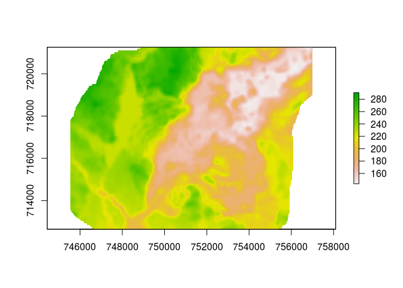
2.4.8 Siatki nieregularne
siatka_n_shp <- readOGR(dsn='data', layer='siatka_n', verbose=FALSE)
plot(siatka_n_shp)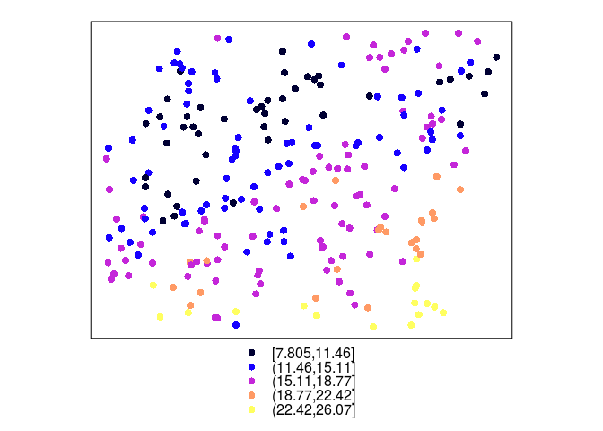
2.5 Eksport danych
2.5.1 Zapisywanie danych wektorowych
library('rgdal')
writeOGR(poligon, dsn="nazwa_folderu", layer="nowy_poligon", driver="ESRI Shapefile")2.5.2 Zapisywanie danych rastrowych
library('raster')
writeRaster(siatka_raster, filename="nazwa_folderu/nowy_raster.tif")2.6 Wizualizacja danych 2D
2.6.1 Dane punktowe
spplot(wolin_lato_los, "X1999.09.13_TPZ")
2.6.2 Dane punktowe
spplot(wolin_lato_los, "odl_od_morza")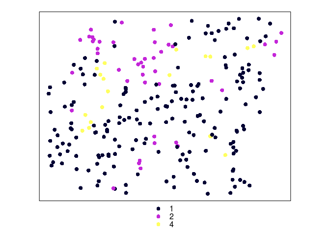
2.6.3 Dane punktowe - kategorie
wolin_lato_los@data$CLC06_p_lato <- as.factor(wolin_lato_los@data$CLC06_p_lato)
spplot(wolin_lato_los, "CLC06_p_lato")
2.6.4 Rastry
library('raster'); library('rasterVis')## Loading required package: lattice## Loading required package: latticeExtra## Loading required package: RColorBrewerlevelplot(siatka_raster, margin=FALSE)
2.7 Tworzenie siatek
2.7.1 Siatki regularne
siatka <- expand.grid(X = seq(from = 451470, to = 483570, by = 1000),
Y = seq(from = 5962620, to = 5985510, by = 1000))
coordinates(siatka) <- ~X + Y
gridded(siatka) <- TRUE2.7.2 Siatki regularne
plot(siatka)
plot(wolin_lato_los, add=TRUE)
2.7.3 Siatki nieregularne
library('raster')
poligon_shp <- readOGR(dsn='data', layer='wolin_polygon', verbose=FALSE)
siatka_n <- raster(extent(poligon_shp))
res(siatka_n) <- c(1000, 1000)
siatka_n[] <- 0
proj4string(siatka_n) <- CRS(proj4string(poligon_shp))
siatka_n <- mask(siatka_n, poligon_shp)2.7.4 Siatki nieregularne
levelplot(siatka_n, margin=FALSE)
2.7.5 Siatki nieregularne
siatka_n <- as(siatka_n, 'SpatialPointsDataFrame')
siatka_n <- siatka_n[!is.na(siatka_n@data$layer), ]
gridded(siatka_n) <- TRUE
plot(siatka_n)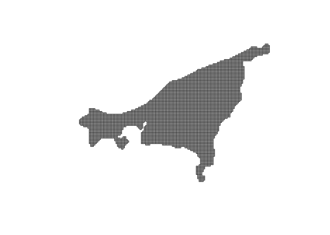
3 Eksploracyjna analiza danych
3.1 Eksploracyjna analiza danych | Cel
- Ogólna charakterystyka danych oraz badanego zjawiska
- Określenie przestrzennego/czasowego typu próbkowania
- Informacja o relacji pomiędzy lokalizacją obserwacji a czynnikami wpływającymi na zmienność przestrzenną cechy
3.2 Dane Wolin
3.2.1 Dane Wolin
library('sp')
library('rgdal')## rgdal: version: 1.1-3, (SVN revision 594)
## Geospatial Data Abstraction Library extensions to R successfully loaded
## Loaded GDAL runtime: GDAL 1.11.2, released 2015/02/10
## Path to GDAL shared files: /usr/share/gdal/1.11
## Loaded PROJ.4 runtime: Rel. 4.8.0, 6 March 2012, [PJ_VERSION: 480]
## Path to PROJ.4 shared files: (autodetected)
## Linking to sp version: 1.2-1wolin_lato_los <- read.csv('data/Wolin_TPZ_p_lato_750losN.csv', na.strings=-999.00)
coordinates(wolin_lato_los) <- ~X+Y
proj4string(wolin_lato_los) <- '+init=epsg:32633'
par(mar=c(rep(0, 4)))
plot(wolin_lato_los)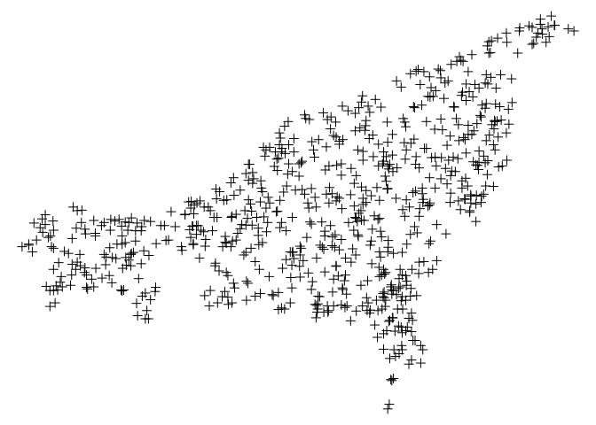
str(wolin_lato_los)## Formal class 'SpatialPointsDataFrame' [package "sp"] with 5 slots
## ..@ data :'data.frame': 750 obs. of 9 variables:
## .. ..$ X1999.09.13_TPZ : num [1:750] 20.5 24.8 26.9 21 23 ...
## .. ..$ X1999.09.13_NDVI: num [1:750] 0.47 0.328 0.279 0.492 0.433 ...
## .. ..$ X2002.08.20_TPZ : num [1:750] 20 28.5 29.3 22.4 23.7 ...
## .. ..$ X2002.08.20_NDVI: num [1:750] 0.492 0.12 0.224 0.441 0.405 ...
## .. ..$ CLC06 : int [1:750] 411 312 112 231 242 211 411 211 231 211 ...
## .. ..$ CLC06_p_lato : int [1:750] 5 4 2 3 2 3 5 3 3 3 ...
## .. ..$ odl_od_morza : num [1:750] 14982 14946 14091 12572 12646 ...
## .. ..$ InsCalk_1999.09 : num [1:750] 48.9 47.6 48.5 48.3 48.6 ...
## .. ..$ InsCalk_2002.08 : num [1:750] 64.6 63.5 64.3 64.2 64.4 ...
## ..@ coords.nrs : int [1:2] 1 2
## ..@ coords : num [1:750, 1:2] 472920 473970 474210 472140 472500 ...
## .. ..- attr(*, "dimnames")=List of 2
## .. .. ..$ : chr [1:750] "1" "2" "3" "4" ...
## .. .. ..$ : chr [1:2] "X" "Y"
## ..@ bbox : num [1:2, 1:2] 451470 5962620 483570 5985510
## .. ..- attr(*, "dimnames")=List of 2
## .. .. ..$ : chr [1:2] "X" "Y"
## .. .. ..$ : chr [1:2] "min" "max"
## ..@ proj4string:Formal class 'CRS' [package "sp"] with 1 slot
## .. .. ..@ projargs: chr "+init=epsg:32633 +proj=utm +zone=33 +datum=WGS84 +units=m +no_defs +ellps=WGS84 +towgs84=0,0,0"str(wolin_lato_los@data)## 'data.frame': 750 obs. of 9 variables:
## $ X1999.09.13_TPZ : num 20.5 24.8 26.9 21 23 ...
## $ X1999.09.13_NDVI: num 0.47 0.328 0.279 0.492 0.433 ...
## $ X2002.08.20_TPZ : num 20 28.5 29.3 22.4 23.7 ...
## $ X2002.08.20_NDVI: num 0.492 0.12 0.224 0.441 0.405 ...
## $ CLC06 : int 411 312 112 231 242 211 411 211 231 211 ...
## $ CLC06_p_lato : int 5 4 2 3 2 3 5 3 3 3 ...
## $ odl_od_morza : num 14982 14946 14091 12572 12646 ...
## $ InsCalk_1999.09 : num 48.9 47.6 48.5 48.3 48.6 ...
## $ InsCalk_2002.08 : num 64.6 63.5 64.3 64.2 64.4 ...poligon <- readOGR('data', 'wolin_polygon')## OGR data source with driver: ESRI Shapefile
## Source: "data", layer: "wolin_polygon"
## with 1 features
## It has 11 fields3.3 Statystyki opisowe
3.3.1 Statystyki opisowe
summary(wolin_lato_los@data)## X1999.09.13_TPZ X1999.09.13_NDVI X2002.08.20_TPZ X2002.08.20_NDVI
## Min. :16.01 Min. :-0.2273 Min. :17.11 Min. :-0.2500
## 1st Qu.:20.24 1st Qu.: 0.3207 1st Qu.:20.48 1st Qu.: 0.2673
## Median :21.46 Median : 0.4101 Median :21.89 Median : 0.3766
## Mean :22.86 Mean : 0.3627 Mean :23.56 Mean : 0.3295
## 3rd Qu.:24.92 3rd Qu.: 0.4752 3rd Qu.:25.81 3rd Qu.: 0.4483
## Max. :33.19 Max. : 0.5912 Max. :41.79 Max. : 0.5724
## NA's :495 NA's :495
## CLC06 CLC06_p_lato odl_od_morza InsCalk_1999.09
## Min. :112 Min. :1.000 Min. : 0 Min. :31.89
## 1st Qu.:231 1st Qu.:3.000 1st Qu.: 1928 1st Qu.:47.89
## Median :311 Median :4.000 Median : 4259 Median :48.25
## Mean :282 Mean :3.603 Mean : 4940 Mean :48.03
## 3rd Qu.:312 3rd Qu.:4.000 3rd Qu.: 7127 3rd Qu.:48.45
## Max. :512 Max. :6.000 Max. :16276 Max. :54.55
##
## InsCalk_2002.08
## Min. :47.02
## 1st Qu.:63.78
## Median :64.09
## Mean :63.87
## 3rd Qu.:64.26
## Max. :69.44
## 3.3.2 Statystyki opisowe | średnia i mediana
median(wolin_lato_los$X1999.09.13_TPZ, na.rm=TRUE)## [1] 21.45667mean(wolin_lato_los$X1999.09.13_TPZ, na.rm=TRUE)## [1] 22.860023.3.3 Statystyki opisowe | średnia i mediana
- w wypadku symetrycznego rozkładu te dwie cechy są równe
- średnia jest bardziej wrażliwa na wartości odstające
- mediana jest lepszą miarą środka danych, jeżeli są one skośne
Po co używać średniej?
- przydatniejsza w przypadku małych zbiorów danych
- gdy rozkład danych jest symetryczny
- (jednak) często warto podawać obie miary
3.3.4 Statystyki opisowe | minimum i maksimum
min(wolin_lato_los$X1999.09.13_TPZ, na.rm=TRUE)## [1] 16.00699max(wolin_lato_los$X1999.09.13_TPZ, na.rm=TRUE)## [1] 33.189763.3.5 Statystyki opisowe | ochylenie standardowe

sd(wolin_lato_los$X1999.09.13_TPZ, na.rm=TRUE)## [1] 3.6615023.4 Wykresy
3.4.1 Histogram
library('ggplot2')
ggplot(wolin_lato_los@data, aes(X1999.09.13_TPZ)) + geom_histogram()## `stat_bin()` using `bins = 30`. Pick better value with `binwidth`.## Warning: Removed 495 rows containing non-finite values (stat_bin).
- Stworzony przez Karla Pearsona
- Jest graficzną reprezentacją rozkładu
danych - Wartości danych są łączone w przedziały (na osi poziomej) a na osi pionowej jest ukazana liczba punktów (obserwacji) w każdym przedziale
- Różny dobór przedziałów może dawać inną informację
- W pakiecie ggplot2, domyślnie przedział to zakres/30
3.4.2 Estymator jądrowy gęstości (ang. kernel density estimation)
ggplot(wolin_lato_los@data, aes(X1999.09.13_TPZ)) + geom_density()## Warning: Removed 495 rows containing non-finite values (stat_density).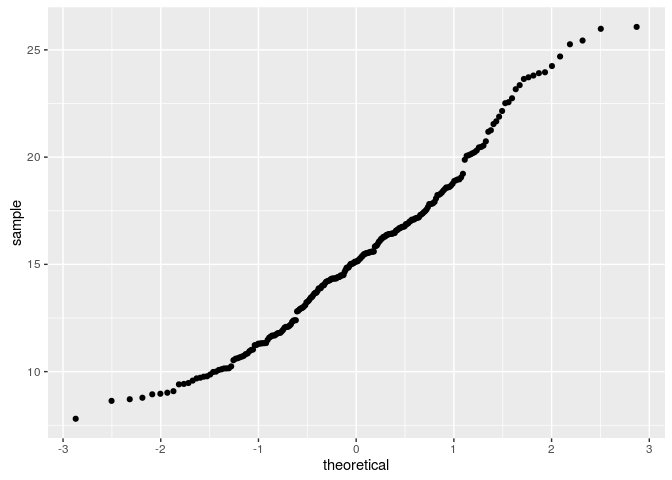
3.4.3 Wykresy kwantyl-kwantyl (ang.quantile-quantile)
ggplot(wolin_lato_los@data, aes(sample=X1999.09.13_TPZ)) + stat_qq()## Warning: Removed 495 rows containing non-finite values (stat_qq).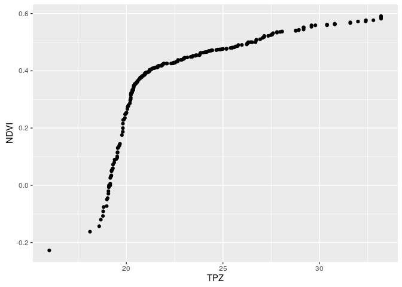
3.4.4 Wykresy kwantyl-kwantyl (ang. quantile-quantile)
http://stats.stackexchange.com/questions/101274/how-to-interpret-a-qq-plot 
ggplot(wolin_lato_los@data) + geom_point(aes(x=X1999.09.13_TPZ, y=X1999.09.13_NDVI)) + xlab('TPZ') + ylab('NDVI')## Warning: Removed 495 rows containing missing values (geom_point).
–>
3.4.5 Dystrybuanta (CDF)
- Dystrybuanta (ang. conditional density function - CDF) wyświetla prawdopodobieństwo, że wartość zmiennej przewidywanej jest mniejsza lub równa określonej wartości
ggplot(wolin_lato_los@data, aes(X1999.09.13_TPZ)) + stat_ecdf()## Warning: Removed 495 rows containing non-finite values (stat_ecdf).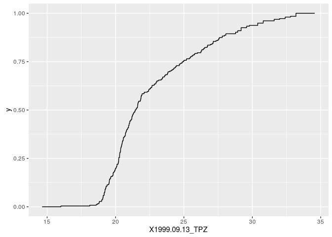
3.5 Porównanie zmiennych
3.5.1 Kowariancja
- Kowariancja jest nieunormowaną miarą zależności liniowej pomiędzy dwiema zmiennymi
- Kowariancja dwóch zmiennych \(x\) i \(y\) pokazuje jak dwie zmienne są ze sobą liniowo powiązane
- Dodatnia kowariancja wzkazuje na pozytywną relację liniową pomiędzy zmiennymi, podczas gdy ujemna kowariancja świadczy o odwrotnej sytuacji
- Jeżeli zmienne nie są ze sobą liniowo powiązane, wartość kowariacji jest bliska zeru
- Inaczej mówiąc, kowariancja stanowi miarę wspólnej zmienności dwóch zmiennych
- Wielkość samej kowariancji uzależniona jest od przyjętej skali zmiennej (jednostki)
- Inne wyniku uzyskamy (przy tej samej zależności pomiędzy parą zmiennych), gdy będziemy analizować wyniki np. wieku i dochodu w złotówkach a inne dla wieku i dochodu w dolarach
cov(wolin_lato_los$X1999.09.13_TPZ, wolin_lato_los$X1999.09.13_NDVI, use= "complete.obs")## [1] -0.44547033.5.2 Współczynnik korelacji
- Wspołczynnik korelacji to unormowana miara zależności pomiędzy dwiema zmiennymi, przyjmująca wartości od -1 do 1
- Współczynnik korelacji jest uzyskiwany poprzez podzielenie wartości kowariancji przez odchylenie standardowe wyników
- Z racji unormowania nie jest ona uzależniona od jednostki
ggplot(wolin_lato_los@data, aes(X1999.09.13_TPZ, X1999.09.13_NDVI)) + geom_point()## Warning: Removed 495 rows containing missing values (geom_point).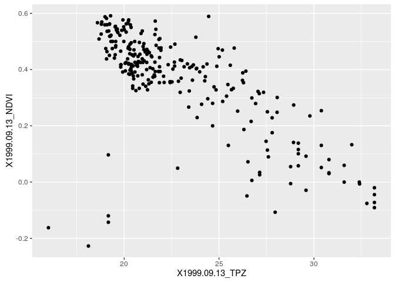
cor(wolin_lato_los$X1999.09.13_TPZ, wolin_lato_los$X1999.09.13_NDVI, use= "complete.obs")## [1] -0.70363983.5.3 Współczynnik korelacji
cor.test(wolin_lato_los$X1999.09.13_TPZ, wolin_lato_los$X1999.09.13_NDVI)##
## Pearson's product-moment correlation
##
## data: wolin_lato_los$X1999.09.13_TPZ and wolin_lato_los$X1999.09.13_NDVI
## t = -15.751, df = 253, p-value < 2.2e-16
## alternative hypothesis: true correlation is not equal to 0
## 95 percent confidence interval:
## -0.7607274 -0.6357494
## sample estimates:
## cor
## -0.70363983.5.4 Współczynnik korelacji
cor(wolin_lato_los@data[c(1:4, 7:9)], use= "complete.obs")## X1999.09.13_TPZ X1999.09.13_NDVI X2002.08.20_TPZ
## X1999.09.13_TPZ 1.0000000 -0.70363978 0.9041594
## X1999.09.13_NDVI -0.7036398 1.00000000 -0.6389463
## X2002.08.20_TPZ 0.9041594 -0.63894626 1.0000000
## X2002.08.20_NDVI -0.6348066 0.89587063 -0.6752586
## odl_od_morza 0.3924286 -0.15757467 0.3481699
## InsCalk_1999.09 0.1431125 0.03585373 0.1180259
## InsCalk_2002.08 0.1549011 0.03858753 0.1300928
## X2002.08.20_NDVI odl_od_morza InsCalk_1999.09
## X1999.09.13_TPZ -0.63480660 0.3924286 0.14311253
## X1999.09.13_NDVI 0.89587063 -0.1575747 0.03585373
## X2002.08.20_TPZ -0.67525858 0.3481699 0.11802594
## X2002.08.20_NDVI 1.00000000 -0.1381452 0.04653160
## odl_od_morza -0.13814523 1.0000000 0.13097399
## InsCalk_1999.09 0.04653160 0.1309740 1.00000000
## InsCalk_2002.08 0.04930027 0.1331220 0.99738708
## InsCalk_2002.08
## X1999.09.13_TPZ 0.15490106
## X1999.09.13_NDVI 0.03858753
## X2002.08.20_TPZ 0.13009279
## X2002.08.20_NDVI 0.04930027
## odl_od_morza 0.13312196
## InsCalk_1999.09 0.99738708
## InsCalk_2002.08 1.000000003.5.5 Współczynnik korelacji
library('corrplot')
corrplot(cor(wolin_lato_los@data[c(1:4, 7:9)], use= "complete.obs"))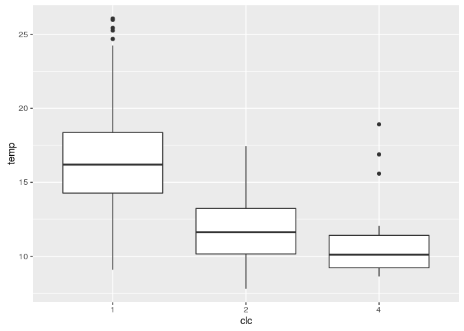
3.5.6 Wykresy pudełkowe
wolin_lato_los$CLC06_p_lato <- as.factor(wolin_lato_los$CLC06_p_lato)
ggplot(wolin_lato_los@data, aes(CLC06_p_lato, X1999.09.13_TPZ)) + geom_boxplot()## Warning: Removed 495 rows containing non-finite values (stat_boxplot).
- obrazuje pięc podstawowych
statystyk opisowych oraz wartości odstające - pudełko to zakres międzykwantylowy
- linie oznaczają najbardziej ekstremalne wartości, ale nie odstające. Górna to 1,5*IQR ponad krawędź pudełka, dolna to 1,5*IQR poniżej wartości dolnej krawędzi pudełka
- linia środkowa to mediana
3.5.7 Wykresy pudełkowe
ggplot(wolin_lato_los@data, aes(CLC06_p_lato, X1999.09.13_TPZ)) + geom_boxplot()## Warning: Removed 495 rows containing non-finite values (stat_boxplot).
- Tereny komunikacyjne i porty
- Zabudowa luźna, złożone systemy upraw i działek
- Grunty orne, Łąki
- Lasy liściaste, Lasy iglaste, mieszane
- Bagna, Torfowiska
- Zbiorniki wodne
3.5.8 Testowanie istotności różnić średniej pomiędzy grupami
wolin_lato_los$CLC06_p_lato <- as.factor(wolin_lato_los$CLC06_p_lato)
aov_test <- aov(X1999.09.13_TPZ~CLC06_p_lato, data=wolin_lato_los)
summary(aov_test)## Df Sum Sq Mean Sq F value Pr(>F)
## CLC06_p_lato 5 1665 333.1 47.66 <2e-16 ***
## Residuals 249 1740 7.0
## ---
## Signif. codes: 0 '***' 0.001 '**' 0.01 '*' 0.05 '.' 0.1 ' ' 1
## 495 observations deleted due to missingness3.5.9 Testowanie istotności różnić średniej pomiędzy grupami
tukey <- TukeyHSD(aov_test, "CLC06_p_lato")
plot(tukey, las=1)
3.6 Transformacje danych
3.6.1 Transformacje danych
- Transformacja danych może mieć na celu ułatwienie porównywania różnych zmiennych, zniwelowanie skośności rozkładu lub też zmniejszenie wpływu danych odstających
- Centrowanie i skalowanie (standaryzacja):
- Centrowanie danych - wybierana jest przeciętna wartość predyktora, a następnie od wszystkich wartości predyktorów odejmowana jest wybrana wcześniej wartość
- Skalowanie danych - dzielenie każdej wartości predyktora przez jego odchylenie standardowe
- Wadą tego podjeścia jest główne zmniejszenie interpretowalności pojedynczych wartości
- Redukcja skośności:
- Logarytmizacja
- Pierwiastkowanie
- Rodzina transformacji Boxa Coxa
- Inne
3.6.2 Transformacja danych | Logarytmizacja
ggplot(wolin_lato_los@data, aes(X2002.08.20_TPZ)) + geom_density()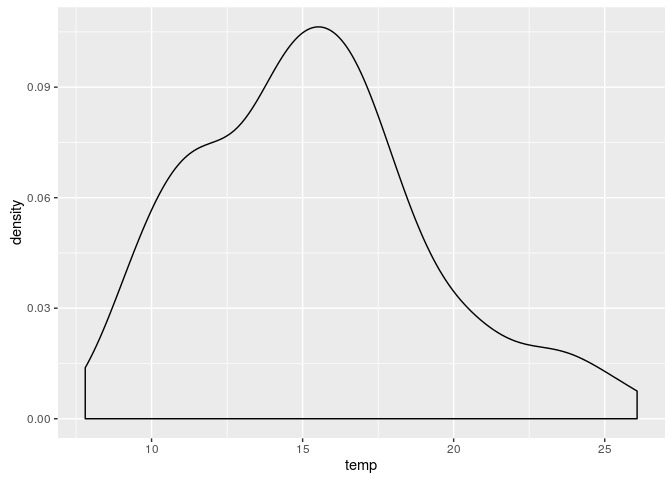
wolin_lato_los$log_tpz <- log(wolin_lato_los$X2002.08.20_TPZ)
ggplot(wolin_lato_los@data, aes(log_tpz)) + geom_density()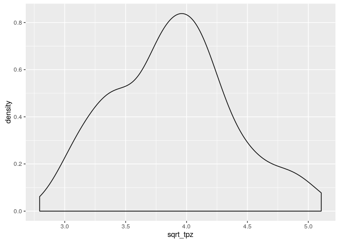
wolin_lato_los$exp_tpz <- exp(wolin_lato_los$log_tpz)
ggplot(wolin_lato_los@data, aes(exp_tpz)) + geom_density()
3.6.3 Transformacja danych | Pierwiastkowanie
ggplot(wolin_lato_los@data, aes(X2002.08.20_TPZ)) + geom_density()
wolin_lato_los$sqrt_tpz <- sqrt(wolin_lato_los$X2002.08.20_TPZ)
ggplot(wolin_lato_los@data, aes(sqrt_tpz)) + geom_density()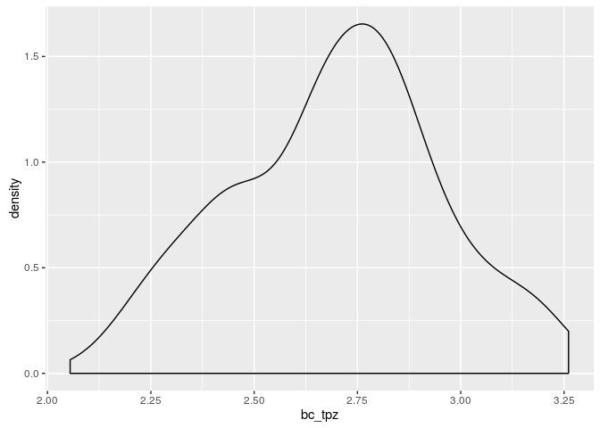
wolin_lato_los$pow_tpz <- wolin_lato_los$sqrt_tpz^2
ggplot(wolin_lato_los@data, aes(pow_tpz)) + geom_density()
3.6.4 Transformacja danych | Rodzina transformacji Boxa Coxa
library('caret')## Loading required package: latticeggplot(wolin_lato_los@data, aes(X2002.08.20_TPZ)) + geom_density()
transformacja <- BoxCoxTrans(wolin_lato_los$X2002.08.20_TPZ)
transformacja## Box-Cox Transformation
##
## 750 data points used to estimate Lambda
##
## Input data summary:
## Min. 1st Qu. Median Mean 3rd Qu. Max.
## 17.11 20.48 21.89 23.56 25.81 41.79
##
## Largest/Smallest: 2.44
## Sample Skewness: 1.34
##
## Estimated Lambda: -2wolin_lato_los$bc_tpz <- predict(transformacja, wolin_lato_los$X2002.08.20_TPZ)
ggplot(wolin_lato_los@data, aes(bc_tpz)) + geom_density()
invBoxCox <- function(x, lambda) if (lambda == 0) exp(x) else (lambda*x + 1)^(1/lambda)
wolin_lato_los$bc_tpz_inv <- invBoxCox(wolin_lato_los$bc_tpz, lambda=-2)
ggplot(wolin_lato_los@data, aes(bc_tpz_inv)) + geom_density()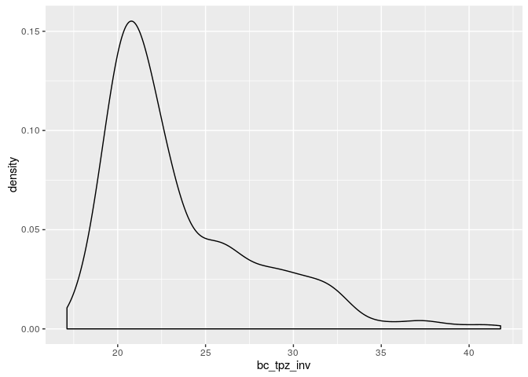
3.7 Mapy
3.7.1 Podstawowe terminy | Kontekst przestrzenny
- Populacja - cały obszar, dla którego chcemy określić wybrane właściwości
- Próba - zbiór obserwacji, dla których mamy informacje. Inaczej, próba to podzbiór populacji. Zazwyczaj niemożliwe (lub bardzo kosztowne) jest zdobycie informacji o całej populacji. Z tego powodu bardzo cenne jest odpowiednie wykorzystanie informacji z próby.
3.7.2 Mapy punktowe | Cel
- Sprawdzenie poprawności współrzędnych
- Wgląd w typ próbkowania
- Sprawdzenie poprawności danych - dane odstające lokalnie
- Identyfikacja głównych cech struktury przestrzennej zjawiska (np. trend)
3.7.3 Typ próbowania
- Regularny
- Losowy
- Losowy stratyfikowany
- Preferencyjny
- Liniowy
3.7.4 Typ próbowania | Regularny
set.seed(225)
regularny <- spsample(poligon, 150, type = 'regular')
plot(regularny)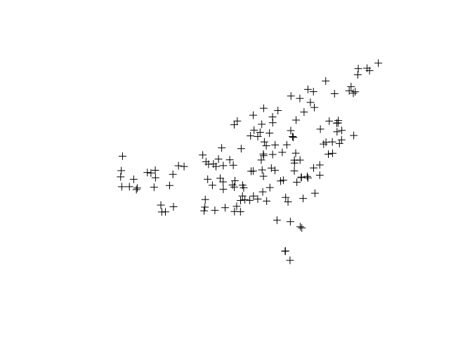
- Zmienna offset
3.7.5 Typ próbowania | Losowy
set.seed(301)
losowy <- spsample(poligon, 150, type = 'random')
plot(losowy)
- Każda lokalizacja ma takie samo prawdopodobieństwo wystąpienia
- Każdy punkt jest losowany niezależnie od pozostałych
3.7.6 Typ próbowania | Losowy stratyfikowany
set.seed(125)
strat <- spsample(poligon, 150, type = 'stratified')
plot(strat)
3.7.7 Typ próbowania | Preferencyjny I
set.seed(425)
pref <- spsample(poligon, 150, type = 'clustered', nclusters=80)
plot(pref)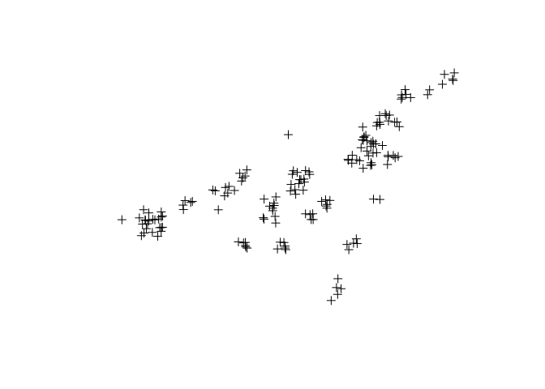
3.7.8 Typ próbowania | Liniowy
library('rgdal')
linia <- readOGR("data", "linia", verbose=FALSE)
set.seed(224)
izoliniowy <- spsample(linia, 150, type = 'regular')
plot(izoliniowy)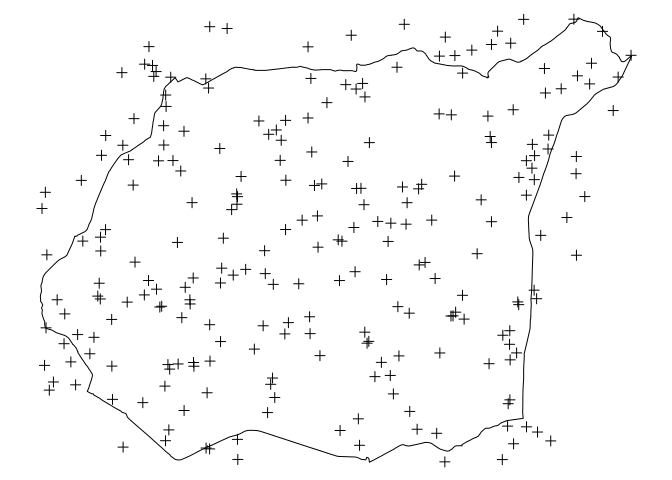
3.7.9 Mapy punktowe i dane lokalnie odstające
par(mar=c(rep(0, 4)))
library('rgdal')
poligon <- readOGR(dsn='data', layer='wolin_polygon', verbose=FALSE)
plot(poligon)
plot(wolin_lato_los, add=TRUE) 
3.7.10 Mapy punktowe i dane lokalnie odstające
library('sp')
# select.spatial(wolin_lato_los, digitize=FALSE, rownames=TRUE)
spplot(wolin_lato_los, "X2002.08.20_TPZ", identify=TRUE)3.7.11 Mapy punktowe i dane lokalnie odstające
spplot(wolin_lato_los, "X2002.08.20_TPZ", sp.layout = poligon)
3.8 Rozgrupowanie danych
3.8.1 Rozgrupowanie danych
- Istnieje szereg metod rozgrupowywania danych, między innymi:
- Rozgrupowywanie komórkowe
- Rozgrupowywanie poligonowe
- Celem tych metod jest nadanie wag obserwacjom w celu zapewnienia reprezentatywności przestrzennej danych
3.8.2 Rozgrupowanie danych
library('sp')
wolin_lato_pref <- read.csv('data/Wolin_TPZ_p_lato_754prefN.csv', na.strings=-999.00)
coordinates(wolin_lato_pref) <- ~X+Y
proj4string(wolin_lato_pref) <- '+init=epsg:32633'
spplot(wolin_lato_pref, "X2002.08.20_TPZ")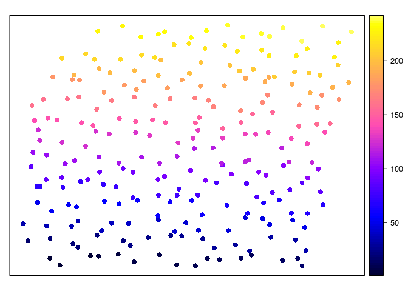
summary(wolin_lato_pref$X2002.08.20_TPZ)## Min. 1st Qu. Median Mean 3rd Qu. Max.
## 18.14 21.96 26.16 26.54 30.07 44.223.8.3 Rozgrupowanie komórkowe I | (ang. cell declustering)
\[w'_j=\frac{\frac{1}{n_i}}{\text{liczba komórek z danymi}} \cdot n\] , gdzie \(n_i\) to liczba obserwacji w komórce, a \(n\) to łączna liczba obserwacji
3.8.4 Rozgrupowanie komórkowe I | (ang. cell declustering)
wolin_lato_pref <- read.csv("data/Wolin_TPZ_p_lato_754prefN.csv", na.strings = -999)
wolin_lato_pref$id <- 1:nrow(wolin_lato_pref)
coordinates(wolin_lato_pref) <- ~X + Y
proj4string(wolin_lato_pref) <- "+init=epsg:32633"
spplot(wolin_lato_pref, "id", colorkey=TRUE)
library('rgdal')
library("raster")
library('rgeos')## rgeos version: 0.3-15, (SVN revision 515)
## GEOS runtime version: 3.4.2-CAPI-1.8.2 r3921
## Linking to sp version: 1.2-1
## Polygon checking: TRUEpoligon_shp <- readOGR(dsn = "data", layer = "wolin_polygon", verbose = FALSE)
siatka_n <- raster(extent(poligon_shp))
# siatka_n <- raster(xmn=450000, xmx=485000, ymn=5960000, ymx=5989000)
res(siatka_n) <- c(1000, 1000)
siatka_n[] <- 0
proj4string(siatka_n) <- CRS(proj4string(wolin_lato_pref))
siatka_n <- mask(siatka_n, gBuffer(poligon_shp, width = 500))
siatka_n <- as(siatka_n, "SpatialPolygonsDataFrame")
siatka_n <- siatka_n[!is.na(siatka_n@data$layer), ]
plot(siatka_n)
plot(wolin_lato_pref, add=TRUE)
wolin_lato_pref$liczebnosc <- rep(0, length(wolin_lato_pref))
siatka_nr <- aggregate(wolin_lato_pref['liczebnosc'], by = siatka_n, FUN = length)
spplot(siatka_nr, "liczebnosc")
liczba <- over(wolin_lato_pref, siatka_nr)
wolin_lato_pref$waga <- ((1/liczba$liczebnosc)/sum(!is.na(siatka_nr$liczebnosc))) * length(wolin_lato_pref)
spplot(wolin_lato_pref, 'waga')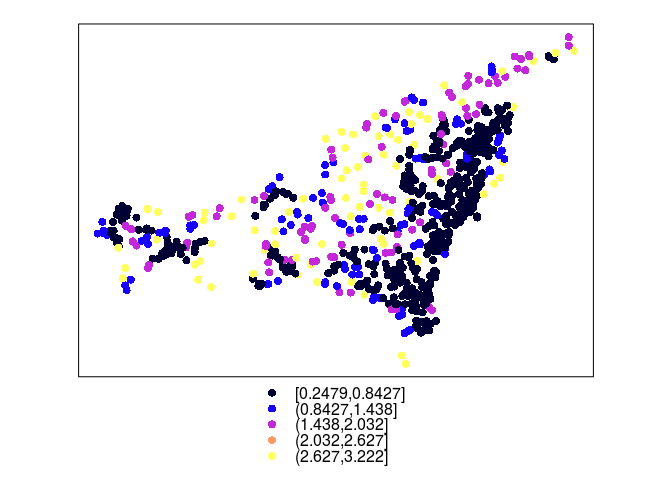
srednia_arytmetyczna <- mean(wolin_lato_pref$X2002.08.20_TPZ)
srednia_wazona_c1 <- mean(wolin_lato_pref$X2002.08.20_TPZ * wolin_lato_pref$waga, na.rm=TRUE)3.8.5 Rozgrupowanie komórkowe II | (ang. cell declustering)
library('gstat')
wolin_lato_pref <- read.csv('data/Wolin_TPZ_p_lato_754prefN.csv', na.strings=-999.00)
wolin_lato_pref$id <- 1:nrow(wolin_lato_pref)
coordinates(wolin_lato_pref) <- ~X+Y
proj4string(wolin_lato_pref) <- '+init=epsg:32633'
spplot(wolin_lato_pref, "id")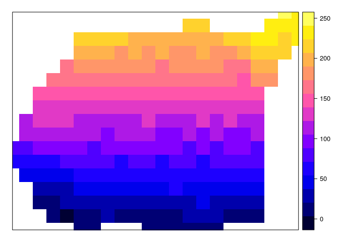
library('raster')
poligon_shp <- readOGR(dsn='data', layer='wolin_polygon', verbose=FALSE)
siatka_n <- raster(extent(poligon_shp))
res(siatka_n) <- c(100, 100)
siatka_n[] <- 0
proj4string(siatka_n) <- CRS(proj4string(wolin_lato_pref))
siatka_n <- mask(siatka_n, poligon_shp)
siatka_n <- as(siatka_n, 'SpatialPointsDataFrame')
siatka_n <- siatka_n[!is.na(siatka_n@data$layer), ]
gridded(siatka_n) <- TRUE
plot(siatka_n)3.8.6 Rozgrupowanie komórkowe II | (ang. cell declustering)
out <- krige(id~1, wolin_lato_pref, siatka_n, nmax=1)## [inverse distance weighted interpolation]spplot(out, "var1.pred")
df <- as.data.frame(table(out[[1]]))
df$waga <- df$Freq/sum(df$Freq)
wolin_lato_pref <- merge(wolin_lato_pref, df, by.x="id", by.y="Var1")
summary(wolin_lato_pref$waga)## Min. 1st Qu. Median Mean 3rd Qu. Max.
## 3.822e-05 4.682e-04 8.791e-04 1.326e-03 1.682e-03 8.829e-03spplot(out, "var1.pred", sp.layout=list("sp.points", wolin_lato_pref))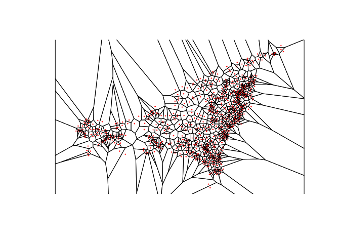
spplot(wolin_lato_pref["waga"])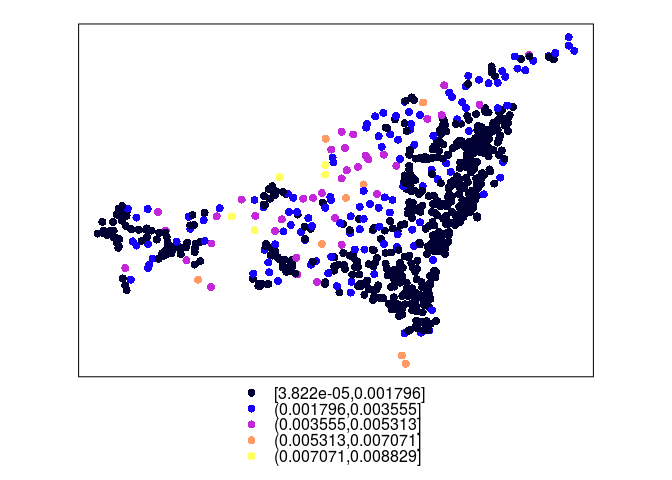
srednia_arytmetyczna <- mean(wolin_lato_pref$X2002.08.20_TPZ)
srednia_wazona_c2 <- sum(wolin_lato_pref$X2002.08.20_TPZ * wolin_lato_pref$waga, na.rm=TRUE)3.8.7 Rozgrupowanie poligonowe | (ang. polygon declustering)
\[w'_j=\frac{area_j}{\sum_{j=1}^{n}area_j} \cdot n\] , gdzie \(area_j\) powierzchnia dla wybranej obserwacji, a \(n\) to łączna liczba obserwacji
3.8.8 Rozgrupowanie poligonowe | (ang. polygon declustering)
wolin_lato_pref <- read.csv('data/Wolin_TPZ_p_lato_754prefN.csv', na.strings=-999.00)
wolin_lato_pref$id <- 1:nrow(wolin_lato_pref)
coordinates(wolin_lato_pref) <- ~X+Y
proj4string(wolin_lato_pref) <- '+init=epsg:32633'
spplot(wolin_lato_pref, "id")
library('dismo')
v <- voronoi(wolin_lato_pref)## Loading required namespace: deldir##
## PLEASE NOTE: The components "delsgs" and "summary" of the
## object returned by deldir() are now DATA FRAMES rather than
## matrices (as they were prior to release 0.0-18).
## See help("deldir").
##
## PLEASE NOTE: The process that deldir() uses for determining
## duplicated points has changed from that used in version
## 0.0-9 of this package (and previously). See help("deldir").plot(wolin_lato_pref, cex=0.2, col='red')
plot(v, add=TRUE)
library('rgeos')
v_intersect <-intersect(poligon_shp, v)## Warning in intersect(poligon_shp, v): non identical CRSplot(wolin_lato_pref, cex=0.2, col='red')
plot(v_intersect, add=TRUE)
v_intersect$pow <- area(v_intersect)
v_intersect$waga <- v_intersect$pow/sum(v_intersect$pow) * length(wolin_lato_pref)
wolin_lato_pref <- merge(wolin_lato_pref, v_intersect[c('id', 'waga')], by='id')
spplot(wolin_lato_pref, 'waga')
srednia_arytmetyczna <- mean(wolin_lato_pref$X2002.08.20_TPZ)
srednia_wazona_p <- mean(wolin_lato_pref$X2002.08.20_TPZ*wolin_lato_pref$waga)| Średnia arytmetyczna | |
|---|---|
| Populacja | 23.46969 |
| Próba | 26.54119 |
| Rozgrupowanie komórkowe I | 24.55135 |
| Rozgrupowanie komórkowe II | 24.08124 |
| Rozgrupowanie poligonowe | 24.07996 |
4 Eksploracyjna analiza danych - geostatystyka
4.1 Interpolacja
4.1.1 Modele deterministyczne
- Parametry tych modeli są zazwyczaj ustalane w oparciu o funkcję odległości lub powierzchni. Brakuje również szacunków na temat oceny błędu modelu. Np:
- Funkcje wielomianowe
- Funkcje sklejane (ang. splines)
- Triangulacje
- IDW (ang. Inverse Distance Weighted)
http://neondataskills.org/Data-Workshops/ESA15-Going-On-The-Grid-Spatial-Interpolation-Basics/
4.1.2 Modele deterministyczne
library('fields')## Loading required package: methods## Loading required package: spam## Loading required package: grid## Spam version 1.3-0 (2015-10-24) is loaded.
## Type 'help( Spam)' or 'demo( spam)' for a short introduction
## and overview of this package.
## Help for individual functions is also obtained by adding the
## suffix '.spam' to the function name, e.g. 'help( chol.spam)'.##
## Attaching package: 'spam'## The following objects are masked from 'package:base':
##
## backsolve, forwardsolve## Loading required package: maps##
## # ATTENTION: maps v3.0 has an updated 'world' map. #
## # Many country borders and names have changed since 1990. #
## # Type '?world' or 'news(package="maps")'. See README_v3. #library('sp')
library('raster')
library('gstat')
library('rgdal')## rgdal: version: 1.1-3, (SVN revision 594)
## Geospatial Data Abstraction Library extensions to R successfully loaded
## Loaded GDAL runtime: GDAL 1.11.2, released 2015/02/10
## Path to GDAL shared files: /usr/share/gdal/1.11
## Loaded PROJ.4 runtime: Rel. 4.8.0, 6 March 2012, [PJ_VERSION: 480]
## Path to PROJ.4 shared files: (autodetected)
## Linking to sp version: 1.2-1wolin_lato_los <- read.csv('data/Wolin_TPZ_p_lato_750losN.csv', na.strings=-999.00)
coordinates(wolin_lato_los) <- ~X+Y
proj4string(wolin_lato_los) <- '+init=epsg:32633'
ras <- raster('data/siatka_raster.tif', level=0)
crs(ras) <- proj4string(wolin_lato_los)
grid <- as(ras, "SpatialGridDataFrame")
poligon <- readOGR("data", "wolin_polygon")## OGR data source with driver: ESRI Shapefile
## Source: "data", layer: "wolin_polygon"
## with 1 features
## It has 11 fields### Modele deterministyczne | Funkcje wielomianowe
wielomian_1 <- gstat(formula=X2002.08.20_TPZ~1, data=wolin_lato_los, degree=1)
wielomian_1_pred <- predict(wielomian_1, newdata=grid)## [ordinary or weighted least squares prediction]spplot(wielomian_1_pred[1], contour=TRUE,main="Powierzchnia trendu - wielomian pierwszego stopnia")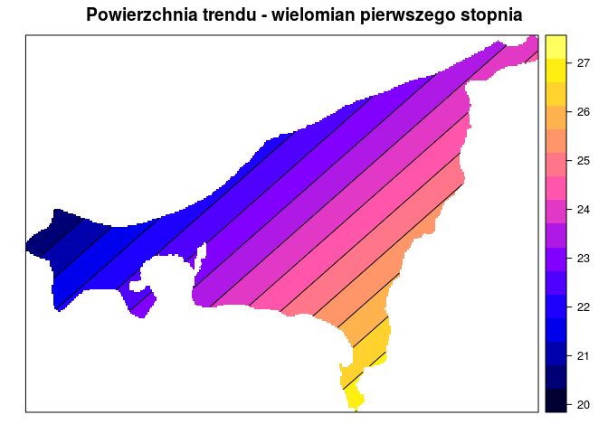
wielomian_2 <- gstat(formula=X2002.08.20_TPZ~1, data=wolin_lato_los, degree=2)
wielomian_2_pred <- predict(wielomian_2, newdata=grid)## [ordinary or weighted least squares prediction]spplot(wielomian_2_pred[1], contour=TRUE,main="Powierzchnia trendu - wielomian drugiego stopnia")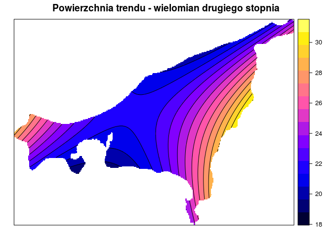
wielomian_3 <- gstat(formula=X2002.08.20_TPZ~1, data=wolin_lato_los, degree=3)
wielomian_3_pred <- predict(wielomian_3, newdata=grid)## [ordinary or weighted least squares prediction]spplot(wielomian_3_pred[1], contour=TRUE,main="Powierzchnia trendu - wielomian trzeciego stopnia")
4.1.3 Modele deterministyczne | Funkcje sklejane
tps <- Tps(coordinates(wolin_lato_los), wolin_lato_los@data$X2002.08.20_TPZ)
spline <- interpolate(ras, tps)
spline <- mask(spline, ras)
spplot(spline, contour=TRUE , main="Funkcje sklejane")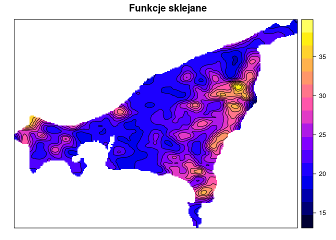
4.1.4 Modele deterministyczne | Triangulacje (Thiessen)
library('dismo')
voronoi_interp <- voronoi(wolin_lato_los)## Loading required namespace: deldir##
## PLEASE NOTE: The components "delsgs" and "summary" of the
## object returned by deldir() are now DATA FRAMES rather than
## matrices (as they were prior to release 0.0-18).
## See help("deldir").
##
## PLEASE NOTE: The process that deldir() uses for determining
## duplicated points has changed from that used in version
## 0.0-9 of this package (and previously). See help("deldir").voronoi_interp <- intersect(poligon, voronoi_interp)## Loading required namespace: rgeos## Warning in intersect(poligon, voronoi_interp): non identical CRSspplot(voronoi_interp, "X2002.08.20_TPZ", contour=TRUE, main="Poligony Voronoi'a")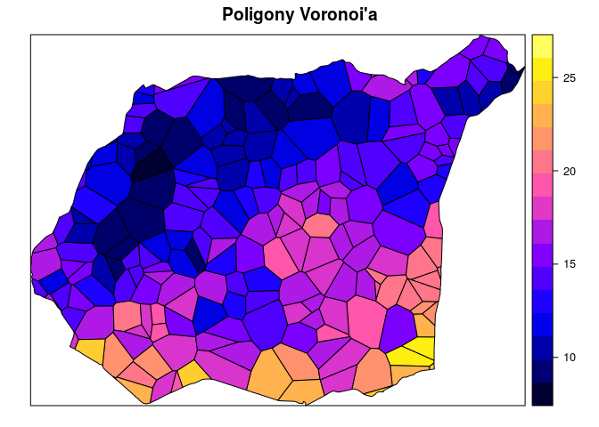
4.1.5 Modele deterministyczne | IDW
idw_wolin <- idw(X2002.08.20_TPZ~1, wolin_lato_los, grid, idp=2)## [inverse distance weighted interpolation]spplot(idw_wolin, 'var1.pred', contour=TRUE, main="IDW")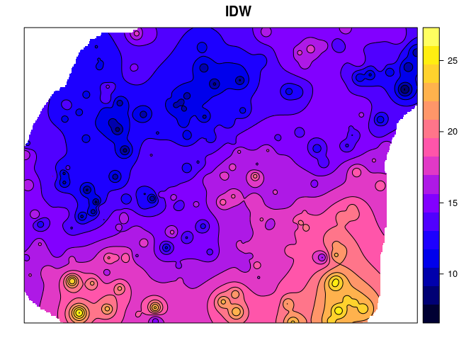
4.1.6 Modele deterministyczne | Porównanie

4.1.7 Modele statystyczne
- Parametry modeli są określane w oparciu o teorię prawdopodobieństwa. Dodatkowo wynik estymacji zawiera oszacowanie błędu. Np.:
- Kriging
- Modele regresyjne
- Modele bayesowe
- Modele hybrydowe
4.2 Geostatystyka - prolog
4.2.1 Geostatystyka
- Zbiór narzędzi statystycznych uwzględniających w analizie danych ich przestrzenną i czasową lokalizację, a opartych o teorię funkcji losowych.
4.2.2 Geostatystyka | Funkcje
- Identyfikacja i modelowanie struktury przestrzennej/czasowej zjawiska
- Estymacja - szacowanie wartości badanej zmiennej w nieopróbowanym miejscu i/lub momencie czasu
- Symulacja - generowanie alternatywnych obrazów, które honorują wyniki pomiarów i strukturę przestrzenną/czasową zjawiska
- Optymalizacja próbkowania/sieci pomiarowej
4.2.3 Geostatystyczna analiza danych

4.2.4 Geostatystyka | Dane wejściowe
- Wystarczająca duża liczba punktów (minimalnie >30, ale zazwyczaj więcej niż 100/150)
- Są reprezentatywne
- Są niezależne
- Były stworzone używając stałej metodyki
- Są wystarczająco dokładne
4.2.5 Geostatystyka | Podstawowe etapy
- Zaprojektowanie sposobu (typu) próbkowania oraz organizacji zadań
- Zebranie danych, analiza labolatoryjna
- Wstepna eksploracja danych, ocena ich jakości
- Modelowanie semiwariogramów na podstawie dostępnych danych
- Estymacja badanej cechy
- Porównanie i ocena modeli
- Stworzenie wynikowego produktu i jego dystrybucja
4.3 Przestrzenna kowariancja, korelacja i semiwariancja
4.3.1 Przestrzenna kowariancja, korelacja i semiwariancja | Założenia
- Przestrzennej ciągłości - przestrzenna korelacja między zmienny w dwóch lokalizacjach zależy tylko od ich odległości (oraz czasem kierunku), lecz nie od tego gdzie są one położone
- Stacjonarności - średnia i wariancja są stałe na całym badanym obszarze
4.3.2 Przestrzenna kowariancja, korelacja i semiwariancja
- \(u\) - wektor współrzędnych
- \(z(u)\) - badana zmienna jako funkcja położenia - inaczej określany jako ogon (ang. tail)
- \(h\) - lag - odstęp pomiędzy dwoma lokalizacjami
- \(z(u+h)\) - wartość badanej zmiennej odległej o odstęp \(h\) - inaczej określany jako głowa (ang. head)
4.3.3 Przestrzenna kowariancja, korelacja i semiwariancja
- Kowariancja i korelacja to miary podobieństwa pomiędzy dwoma zmiennymi
- Przenosząc to na aspekt przestrzenny, badamy jedną zmienną ale pomiędzy dwoma punktami odległymi od siebie o pewien dystans (okreslany jako lag)
- W efekcie otrzymujemy miarę podobieństwa pomiędzy wartością głowy i ogona
- Trzecią miarę charakteryzującą relację między obserwacjami odległymi o kolejne odstępy jest semiwariancja
- Z praktycznego punktu widzenia, semiwariogram jest preferowaną miarą relacji przestrzennej, ponieważ wykazuje tendencję do lepszego wygładzania danych niż funkcja kowariancji
- Dodatkowo, semiwariogram jest mniej wymagający obliczeniowo
- Jednocześnie, dla potrzeb interpretacji relacji kowarancja i korelacja przestrzenna nadaje się nie gorzej niż semiwariancja
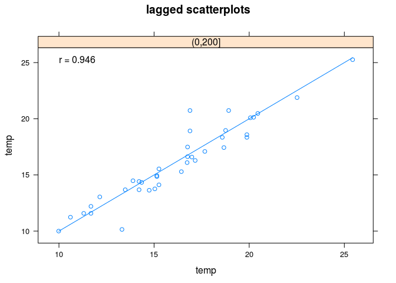
4.3.4 Wykres rozrzutu z przesunięciem
hscat(X2002.08.20_TPZ~1, wolin_lato_los, breaks=seq(0, 1350, by=150))
4.3.5 Autokowariancja
- Autokowariancja pokazuje jak mocno są ze sobą powiązane przestrzennie wartości pary obserwacji odległych od siebie o kolejne przedziały
kowario <- variogram(X2002.08.20_TPZ~1, wolin_lato_los, covariogram = TRUE)
plot(kowario)
4.3.6 Autokorelacja
- Autokorelogram jest wykresem pokazującym jedną z miar autokorelacji (np. I Morana lub C Geary’ego) w stosunku do odległości
library('pgirmess')
library('ggplot2')
wsp <- coordinates(wolin_lato_los)
kor <- correlog(wsp, wolin_lato_los$X2002.08.20_TPZ)
kor <- as.data.frame(kor)
ggplot(kor, aes(dist.class, coef)) + geom_smooth(linetype=0) + geom_line() + geom_point(size=5)
4.3.7 Semiwariancja
- Zmienność przestrzenna może być określona za pomocą semiwariancji. Jest to połowa średniej kwadratu różnicy pomiędzy wartościami badanej zmiennej w dwóch lokalizacjach odległych o wektor \(h\) \[ \gamma(h) = \frac{1}{2}E[(z(s) - z(s+h))^2] \]
4.3.8 Określenie występowania autokorelacji przestrzennej | Chmura semiwariogramu
- Jeżeli w badanej próbie mamy \(n\) obserwacji oznacza to, że możemy zaobserwować \(\frac{1}{2}n(n-1)\) par obserwacji
- Każda para obserwacji daje nam informacje o semiwariancji występującej wraz z odległością
- Semiwariancję można zaprezentować na wykresie zwanym chumrą semiwariogramu
4.3.9 Semiwariancja | Przykładowe obliczenia
odl <- dist(coordinates(wolin_lato_los)[c(1, 2), ])
gamma <- 0.5 * (wolin_lato_los$X2002.08.20_TPZ[1] - wolin_lato_los$X2002.08.20_TPZ[2])^2
gamma## [1] 36.401014.3.10 Określenie występowania autokorelacji przestrzennej | Chmura semiwariogramu
library('gstat')
vario_cloud <- variogram(X2002.08.20_TPZ~1, wolin_lato_los, cloud=TRUE)
plot(vario_cloud) 
4.3.11 Określenie występowania autokorelacji przestrzennej | Chmura semiwariogramu
vario_cloud_sel <- plot(variogram(X2002.08.20_TPZ~1, wolin_lato_los, cloud=TRUE), digitize=TRUE)
plot(vario_cloud_sel, wolin_lato_los) 4.3.12 Semiwariogram | Charakterystyka struktury przestrzennej
- Semiwariogram to wykres pokazujący relację pomiędzy odległością a semiwariancją
- Jest to uśrednieniem semiwariancji dla kolejnych odstępów (lagów)
- W oparciu o semiwariogram empiryczny możemy następnie dopasować do niego model/e
\[ \hat{\gamma}(h) = \frac{1}{2N(h)}\sum_{i=1}^{N(h)}(z(s_i) - z(s_i+h))^2 \]
gdzie \(N(h)\) oznacza liczbę par punktów w odstępie \(h\)
4.3.13 Semiwariogram
- Nugget - efekt nuggetowy - pozwala na określenie błędu w danych wejściowych oraz zmienności na dystansie krótszym niż pierwszy odstęp
- Sill - semiwariancja progowa - oznacza wariancję badanej zmiennej
- Range - zasięg - to odległość do której istnieje przestrzenna korelacja
4.3.14 Semiwariogram | Rules of thumb
- W każdym odstępie powinno się znaleźć co najmniej 30 par punktów
- Maksymalny zasięg semiwariogramu (ang. cutoff distance) to 1/2 pierwiastka z badanej powierzchni (inne źródła mówią o połowie z przekątnej badanego obszaru/jednej trzeciej)
- Liczba odstępów powinna nie być mniejsza niż 10
- Optymalnie maksymalny zasięg semiwariogramu powinien być dłuższy o 10-15% od zasięgu zjawiska
- Optymalnie odstępy powinny być jak najbliżej siebie i jednocześnie nie być chaotyczne
- Warto metodą prób i błędów określić optymalne parametry semiwariogramu
- Należy określić czy zjawisko wykazuje anizotropię przestrzenną
4.3.15 Semiwariogram | Obliczenia pomocnicze
- Liczba par obserwacji
0.5*length(wolin_lato_los)*(length(wolin_lato_los)-1)## [1] 280875- Połowa pierwiastka powierzchni
pow <- area(poligon)
as.vector(0.5*sqrt(pow))## [1] 8086.384- Powierzchnia zajmowana przez jedną próbkę
pow_pr <- area(poligon)/length(wolin_lato_los)
pow_pr## 0
## 348744.6- Średnia odległość między punktami
sqrt(pow_pr)## 0
## 590.5464.3.16 Semiwariogram | Maksymalny zasięg semiwariogramu (ang. Cutoff distance)
- Maksymalny zasięg semiwariogramu (ang. Cutoff distance) jest domyślnie wyliczany w pakiecie gstat jako 1/3 z najdłuższej przekątnej badanego obszaru
vario_par <- variogram(X2002.08.20_TPZ~1, wolin_lato_los)
vario_par## np dist gamma dir.hor dir.ver id
## 1 2489 586.6262 9.403402 0 0 var1
## 2 6419 1356.0526 12.479666 0 0 var1
## 3 9455 2209.0161 14.698134 0 0 var1
## 4 11765 3079.7299 15.121831 0 0 var1
## 5 13604 3951.9182 15.237225 0 0 var1
## 6 14898 4827.0845 15.610348 0 0 var1
## 7 15759 5695.0007 16.254005 0 0 var1
## 8 16230 6572.6776 17.197791 0 0 var1
## 9 15903 7444.9323 18.396612 0 0 var1
## 10 15958 8323.4239 19.334907 0 0 var1
## 11 15848 9199.8893 19.961577 0 0 var1
## 12 15388 10074.5949 21.121819 0 0 var1
## 13 14428 10950.7884 22.549906 0 0 var1
## 14 13438 11816.4479 22.366048 0 0 var1
## 15 12138 12695.1130 22.716514 0 0 var1plot(vario_par, plot.numbers=TRUE)
vario_par <- variogram(X2002.08.20_TPZ~1, wolin_lato_los, cutoff = 8000)
plot(vario_par)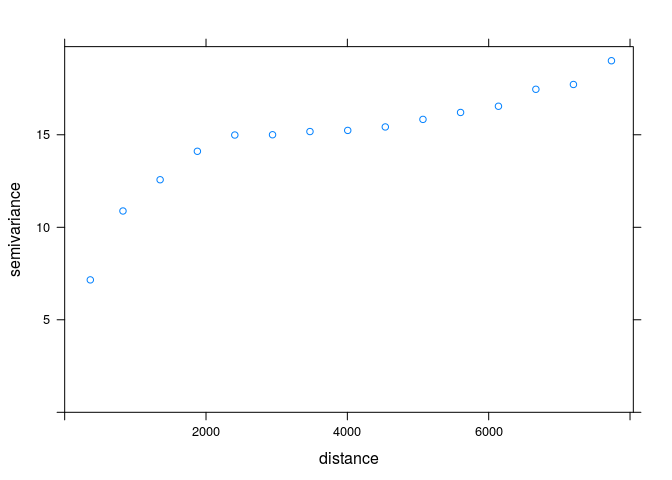
4.3.17 Semiwariogram | Odległość między przedziałami (ang, Interval width )
- Domyślnie to maksymalny zasięg semiwariogramu podzielony przez 15 dahe odległość między przedziałami (ang, Interval width )
vario_par <- variogram(X2002.08.20_TPZ~1, wolin_lato_los, cutoff = 1000, width = 250)
plot(vario_par)
4.4 Anizotropia
4.4.1 Anizotropia struktury przestrzennej
- W wielu rzeczywistych sytuacjach, wartość cechy zależy nie tylko od odległości, ale także od kierunku
4.4.2 Mapa semiwariogramu
- Mapa semiwariogramu (powierzchnia semiwariogramu) służy do określenia czy struktura przestrzenna zjawiska posiada anizotropię, a jeżeli tak to w jakim kierunku
- Na podstawie mapy semiwariogramu identyfikuje się parametry potrzebne do zbudowania semiwariogramów kierunkowych
vario_map <- variogram(X2002.08.20_TPZ~1, wolin_lato_los, cutoff=12000, width=800, map=TRUE)
# plot(vario_map, threshold=30) # co najmniej 30 par punktów4.4.3 Mapa semiwariogramu | 3D
library('rasterVis')
plot3D(raster(vario_map$map), col=rainbow)4.4.4 Semiwariogramy kierunkowe | Kierunki
- W przypadku, gdy zjawisko wykazuje anizotropię przestrzenną, możliwe jest stworzenie semiwariogramów dla różnych wybranych kierunków
- Przykładowo, dla argumentu alpha = c(0, 45, 90, 135) cztery główne kierunki to 0, 45, 90 i 135 stopni. Oznacza to, że dla kierunku 45 stopni brane pod uwagę będą wszystkie pary punktów pomiędzy 22,5 a 67,5 stopnia.
vario_kier <- variogram(X2002.08.20_TPZ~1, wolin_lato_los, alpha = c(0, 45, 90, 135))
plot(vario_kier)
4.4.5 Semiwariogramy kierunkowe | Kierunki
vario_kier <- variogram(X2002.08.20_TPZ~1, wolin_lato_los, alpha = c(60, 105, 150, 195))
plot(vario_kier)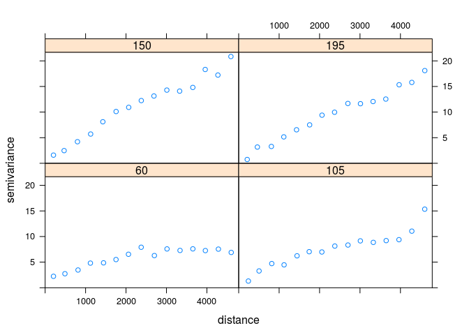
4.5 Krossemiwariogramy
4.5.1 Krossemiwariogramy
- Krossemiwariogram jest to wariancja różnicy pomiędzy dwiema zmiennymi w dwóch lokalizacjach
- Wyliczając Krossemiwariogram otrzymujemy empiryczne semiwatiogramy dla dwóch badanych zmiennych oraz kroswariogram dla kombinacji dwóch zmiennych
- Krossemiwariogram znajduje swoje zastosowanie w technice zwanej kokrigingiem
4.5.2 Krossemiwariogramy
library('sp')
wolin_lato_los <- read.csv('data/Wolin_TPZ_p_lato_750losN.csv', na.strings=-999.00)
coordinates(wolin_lato_los) <- ~X+Y
proj4string(wolin_lato_los) <- '+init=epsg:32633'
wolin_lato_los_255 <- wolin_lato_los[!is.na(wolin_lato_los$X1999.09.13_TPZ), ]
wolin_lato_los_750 <- wolin_lato_los
library('gstat')
g <- gstat(NULL, id="TPZ1999", form = X1999.09.13_TPZ~1, data = wolin_lato_los_255)
g <- gstat(g, id="TPZ2000", form = X2002.08.20_TPZ~1, data = wolin_lato_los_750)
g## data:
## TPZ1999 : formula = X1999.09.13_TPZ`~`1 ; data dim = 255 x 9
## TPZ2000 : formula = X2002.08.20_TPZ`~`1 ; data dim = 750 x 9plot(variogram(g))
4.5.3 Krossemiwariogramy
# plot(variogram(g, map=TRUE, cutoff=12000, width=800))
plot(variogram(g, alpha = c(60, 105, 150, 195)))
5 Modelowanie matematycznie autokorelacji przestrzennej
5.0.1 Modelowanie matematycznie autokorelacji przestrzennej
- Semiwariogram empiryczny jest:
- Nieciągły - wartości semiwariancji są średnimi przedziałowymi
- Chaotyczny - badana próba jest jedynie przybliżeniem rzeczywistości, dodatkowo obciążonym błędami
- Estymacje i symulacje przestrzenne wymagają modelu struktury przestrzennej analizowanej cechy, a nie tylko wartości empirycznych (wyliczonych z danych)
- Dodatkowo, matematycznie modelowanie wygładza chaotyczne fluktuacje danych empirycznych
5.1 Modele podstawowe
5.1.1 Modele podstawowe
- Nuggetowy (ang. Nugget effect model)
- Sferyczny (ang. Spherical model)
- Gaussowski (ang. Gaussian model)
- Potęgowy (ang. Power model)
- Wykładniczy (ang. Exponential model)
- Inne
5.1.2 Modele podstawowe
library('gstat')
vgm()## short long
## 1 Nug Nug (nugget)
## 2 Exp Exp (exponential)
## 3 Sph Sph (spherical)
## 4 Gau Gau (gaussian)
## 5 Exc Exclass (Exponential class)
## 6 Mat Mat (Matern)
## 7 Ste Mat (Matern, M. Stein's parameterization)
## 8 Cir Cir (circular)
## 9 Lin Lin (linear)
## 10 Bes Bes (bessel)
## 11 Pen Pen (pentaspherical)
## 12 Per Per (periodic)
## 13 Wav Wav (wave)
## 14 Hol Hol (hole)
## 15 Log Log (logarithmic)
## 16 Pow Pow (power)
## 17 Spl Spl (spline)
## 18 Leg Leg (Legendre)
## 19 Err Err (Measurement error)
## 20 Int Int (Intercept)5.1.3 Modele podstawowe
show.vgms()
5.1.4 Modele podstawowe
show.vgms(models=c("Nug", "Sph", "Gau", "Pow", "Exp"), range=1.4, max=2.5)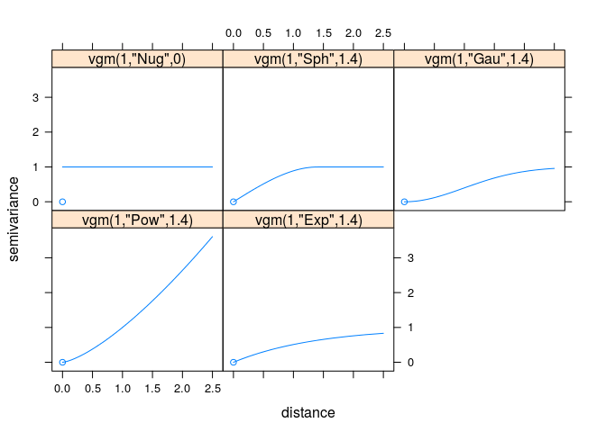
5.1.5 Modele podstawowe
show.vgms(models=c("Nug", "Sph", "Gau", "Pow", "Exp"), range=1.4, max=2.5, as.groups = TRUE)
5.2 Metody modelowania
5.2.1 Metody modelowania
- Ustawianie “ręczne” parametrów modelu, np. funkcja vgm z pakietu gstat
- Ustawianie “wizualne” parametrów modelu, np. funkcja eyefit z pakietu geoR
- Automatyczny wybór parametrów na podstawie różnych kryterów statystycznych, np. funkcja fit.variogram z pakietu gstat, variofit z pakietu geoR, autofitVariogram z pakietu automap
5.2.2 Metody modelowania
- Odpowiednie określenie modelu matematycznego często nie jest proste
- Automatyczne metody nie zawsze są w stanie dać lepszy wynik od modelowania “ręcznego”
- Najlepiej, gdy wybór modelu oparty jest o wiedzę na temat zakładanego procesu przestrzennego
5.2.3 Metody modelowania | Liniowy model regionalizacji
- W przypadku, gdy analizowane zjawisko jest złożone, odwzorowanie kształtu semiwariogramu empirycznego wymaga połączenia dwóch lub większej liczby modeli podstawowych
- W takiej sytuacji konieczne jest spełnienie dwóch warunków:
- Wszystkie zastosowane modele muszą być dopuszczalne (vgm())
- Wariancja progowa każdego podstawowego modelu musi być dodatnia
5.3 Modelowanie semiwariogramu
5.3.1 Modelowanie semiwariogramu | funkcja fit.variogram
- Funkcja fit.variogram dopasowuje zasięg oraz semiwariancję progową w oparciu o ustalone “ręcznie” parametry modelu
5.4 Modelowanie izotropowe
5.4.1 Modelowanie izotropowe | Modelowanie “wizualne”
library('geoR')
v_eye <- eyefit(variog(as.geodata(wolin_lato_los, "X2002.08.20_TPZ")))
ve_fit <- as.vgm.variomodel(v_eye[[1]])5.4.2 Modelowanie izotropowe | Model nuggetowy
library('raster')
library('gstat')
vario <- variogram(X2002.08.20_TPZ~1, wolin_lato_los, cutoff=20000)
plot(vario)
model_nug <- vgm(10, model = 'Nug')
model_nug## model psill range
## 1 Nug 10 0plot(vario, model=model_nug)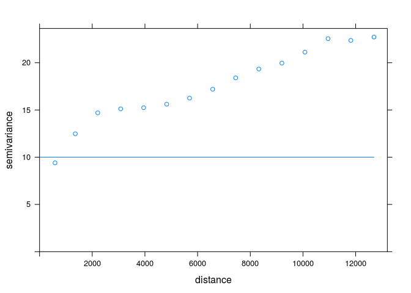
fitted_nug <- fit.variogram(vario, model_nug)
fitted_nug## model psill range
## 1 Nug 13.46823 0plot(vario, model=fitted_nug)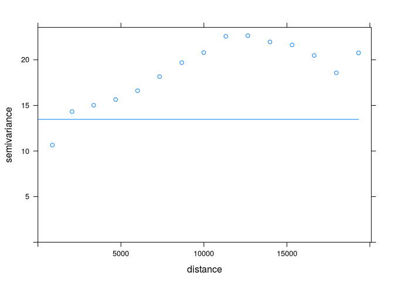
5.4.3 Modelowanie izotropowe | Model sferyczny
vario <- variogram(X2002.08.20_TPZ~1, wolin_lato_los, cutoff=20000)
plot(vario)
model_sph <- vgm(psill=15, model = 'Sph', range=2500)
model_sph## model psill range
## 1 Sph 15 2500plot(vario, model=model_sph)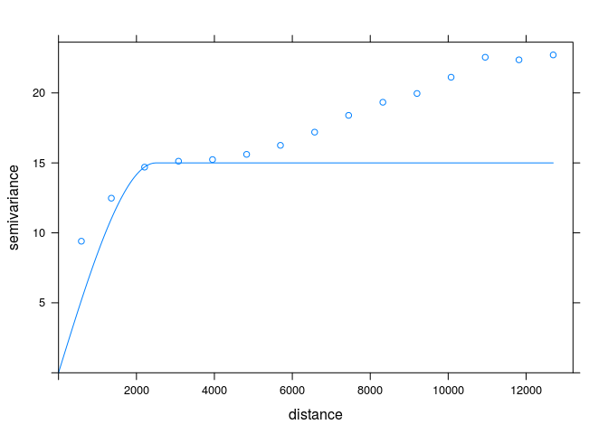
fitted_sph <- fit.variogram(vario, model_sph)
fitted_sph## model psill range
## 1 Sph 15.92886 1807.716plot(vario, model=fitted_sph)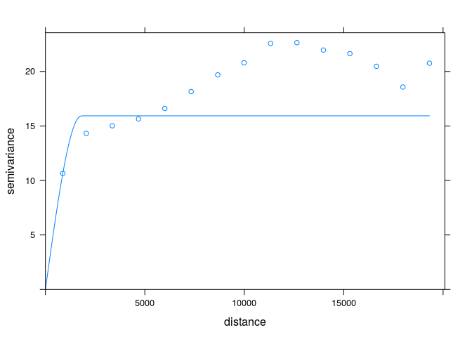
5.4.4 Modelowanie izotropowe | Model Gaussowski
vario <- variogram(X2002.08.20_TPZ~1, wolin_lato_los, cutoff=20000)
plot(vario)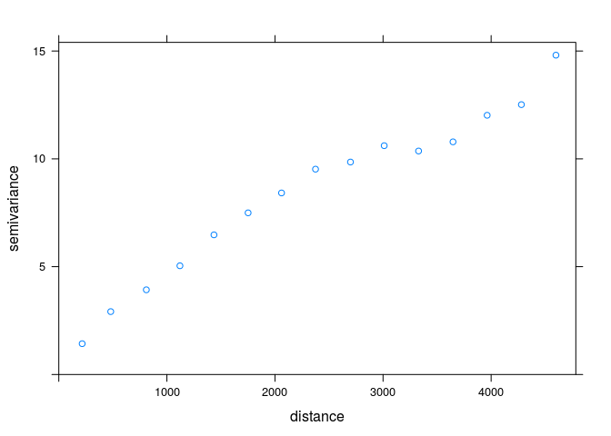
model_gau <- vgm(psill=15, model = 'Gau', range=900)
model_gau## model psill range
## 1 Gau 15 900plot(vario, model=model_gau)
fitted_gau <- fit.variogram(vario, model_gau)
fitted_gau## model psill range
## 1 Gau 15.99224 695.0783plot(vario, model=fitted_gau)
5.4.5 Modelowanie izotropowe | Model potęgowy
vario <- variogram(X2002.08.20_TPZ~1, wolin_lato_los, cutoff=20000)
plot(vario)
model_pow <- vgm(psill=2, model = 'Pow', range=0.25)
model_pow## model psill range
## 1 Pow 2 0.25plot(vario, model=model_pow)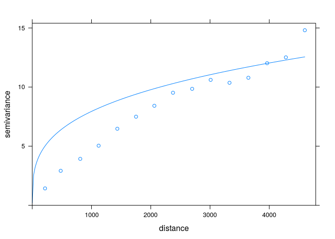
fitted_pow <- fit.variogram(vario, model_pow)
fitted_pow## model psill range
## 1 Pow 2.017736 0.2486255plot(vario, model=fitted_pow)
5.4.6 Modelowanie izotropowe | Model wykładniczy
vario <- variogram(X2002.08.20_TPZ~1, wolin_lato_los, cutoff=20000)
plot(vario)
model_exp <- vgm(psill=15, model = 'Exp', range=900)
model_exp## model psill range
## 1 Exp 15 900plot(vario, model=model_exp)fitted_exp <- fit.variogram(vario, model_exp)
fitted_exp## model psill range
## 1 Exp 17.04506 943.5193plot(vario, model=fitted_exp)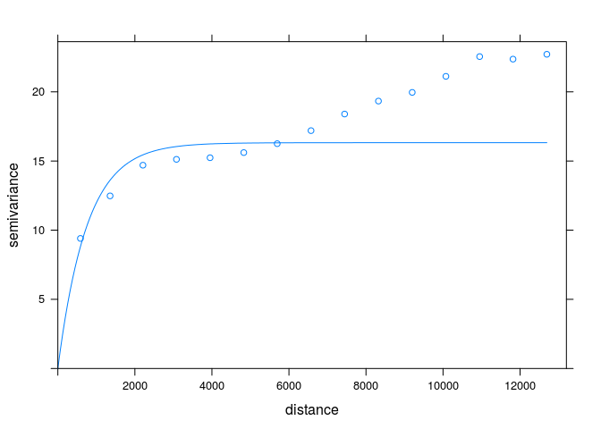
5.4.7 Modelowanie izotropowe | Modele złożone I
vario <- variogram(X2002.08.20_TPZ~1, wolin_lato_los, cutoff=20000)
model_zl1 <- vgm(psill=10, model = 'Sph', range = 9000, add.to = vgm(9, "Nug"))
model_zl1## model psill range
## 1 Nug 9 0
## 2 Sph 10 9000fitted_zl1 <- fit.variogram(vario, model_zl1)
fitted_zl1## model psill range
## 1 Nug 9.940273 0.00
## 2 Sph 11.412555 12025.31plot(vario, model=fitted_zl1)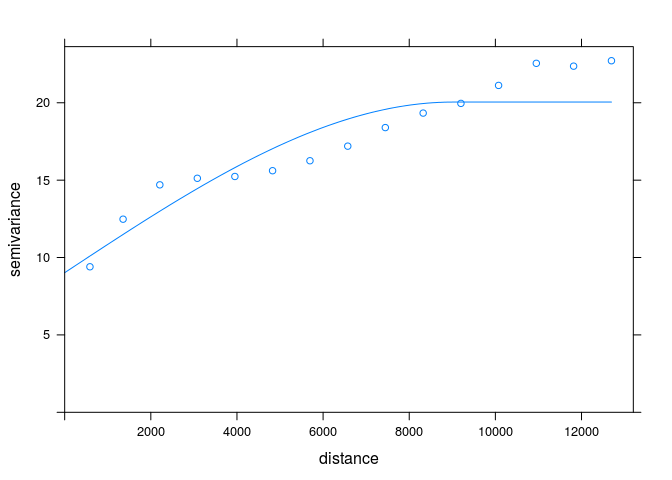
5.4.8 Modelowanie izotropowe | Modele złożone II
vario <- variogram(X2002.08.20_TPZ~1, wolin_lato_los, cutoff=20000)
model_zl2 <- vgm(10, model = 'Sph', range = 4000, add.to = vgm(5, "Gau", 8000, nugget = 5))
model_zl2## model psill range
## 1 Nug 5 0
## 2 Gau 5 8000
## 3 Sph 10 4000fitted_zl2 <- fit.variogram(vario, model_zl2)
plot(vario, model=fitted_zl2)
5.5 Modelowanie anizotropowe
5.5.1 Anizotropia
- Uwzględnienie anizotropii wymaga zamiany parametru zasięgu na trzy inne parametry:
- Zasięg w dominującym kierunku
- Kąt określający dominujący kierunek
- Proporcję anizotropii, czyli relację pomiędzy zasięgiem w dominującym kierunku a zasięgiem w przeciwległym kierunku
vario_map <- variogram(X2002.08.20_TPZ~1, wolin_lato_los, cutoff=8000, width=500, map=TRUE)
plot(vario_map)
vario_kier <- variogram(X2002.08.20_TPZ~1, wolin_lato_los, alpha = c(60, 105, 150, 195), cutoff=20000)
plot(vario_kier, plot.numbers=TRUE)
vario_kier_fit <- vgm(psill=10, model="Sph", range=10000, nugget=8, anis = c(60, .25))
plot(vario_kier, vario_kier_fit, as.table=TRUE)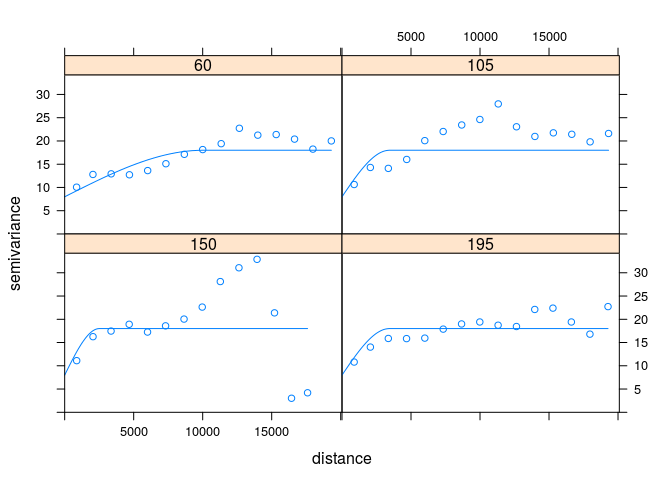
5.6 Modelowanie krossemiwariogramów
5.6.1 Modelowanie krossemiwariogramów | fit.lmc
- Funkcja fit.lmc dopasowuje liniowy model koregionalizacji do semiwariogramów wielozmienych
5.6.2 Modelowanie krossemiwariogramów
wolin_lato_los_255 <- wolin_lato_los[!is.na(wolin_lato_los$X1999.09.13_TPZ), ]
wolin_lato_los_750 <- wolin_lato_los
library('gstat')
g <- gstat(NULL, id="TPZ1999", form = X1999.09.13_TPZ~1, data = wolin_lato_los_255)
g <- gstat(g, id="TPZ2002", form = X2002.08.20_TPZ~1, data = wolin_lato_los_750)
g## data:
## TPZ1999 : formula = X1999.09.13_TPZ`~`1 ; data dim = 255 x 9
## TPZ2002 : formula = X2002.08.20_TPZ`~`1 ; data dim = 750 x 9v <- variogram(g)
plot(v)
g <- gstat(g, model=vgm(17, "Sph", 12000, 5), fill.all=TRUE)
g_fit <- fit.lmc(v, g, fit.ranges = FALSE, fit.method=1)
g_fit## data:
## TPZ1999 : formula = X1999.09.13_TPZ`~`1 ; data dim = 255 x 9
## TPZ2002 : formula = X2002.08.20_TPZ`~`1 ; data dim = 750 x 9
## variograms:
## model psill range
## TPZ1999[1] Nug 5.325525 0
## TPZ1999[2] Sph 11.441263 12000
## TPZ2002[1] Nug 10.042044 0
## TPZ2002[2] Sph 11.626818 12000
## TPZ1999.TPZ2002[1] Nug 7.312944 0
## TPZ1999.TPZ2002[2] Sph 10.911990 12000plot(v, g_fit)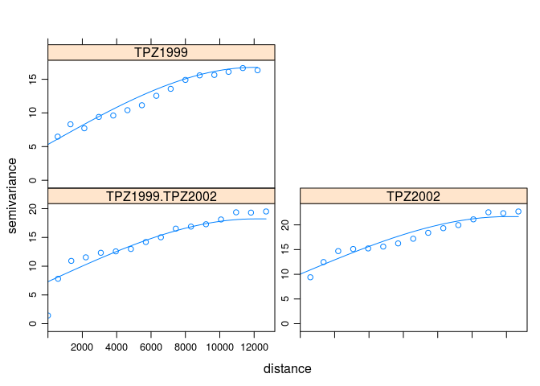
–>
6 Estymacje jednozmienne
6.1 Kriging
6.1.1 Kriging | Interpolacja geostatystyczna
- Zaproponowana w latach 50. przez Daniela Krige
- Istnieje wiele rodzajów krigingu
- Główna zasada mówi, że prognoza w danej lokalizacji jest kombinacją obokległych obserwacji
- Waga nadawana każdej z obserwacji jest zależna od stopnia (przestrzennej) korelacji - stąd też bierze się istotna rola semiwariogramów
6.2 Rodzaje krigingu
6.2.1 Rodzaje krigingu
- Kriging prosty (ang. Simple kriging)
- Kriging zwykły (ang. Ordinary kriging)
- Kriging z trendem (ang. Kriging with a trend)
- Kriging stratyfikowany (ang. Kriging within strata – KWS)
- Kriging prosty ze zmiennymi średnimi lokalnymi (ang. Simple kriging with varying local means - SKlm)
- Kriging z zewnętrznym trendem/Uniwersalny kriging (ang.Kriging with an external trend/Universal kriging)
- Kriging danych kodowanych (ang. Indicator kriging)
- Kokriging (ang. Co-kriging)
- Inne
6.3 Kriging prosty (ang. Simple kriging)
6.3.1 Kriging prosty (ang. Simple kriging)
- Zakłada, że średnia jest znana i stała na całym obszarze
6.3.2 Kriging prosty (ang. Simple kriging)
library('raster')
ras <- raster('data/siatka_raster.tif')
grid <- as(ras, "SpatialGridDataFrame")
proj4string(grid) <- proj4string(wolin_lato_los)
library('gstat')
vario <- variogram(X2002.08.20_TPZ~1, wolin_lato_los)
model_zl2 <- vgm(10, model = 'Sph', range = 4000, add.to = vgm(5, "Gau", 8000, nugget = 5))
model_zl2## model psill range
## 1 Nug 5 0
## 2 Gau 5 8000
## 3 Sph 10 4000fitted_zl2 <- fit.variogram(vario, model_zl2)
plot(vario, model=fitted_zl2)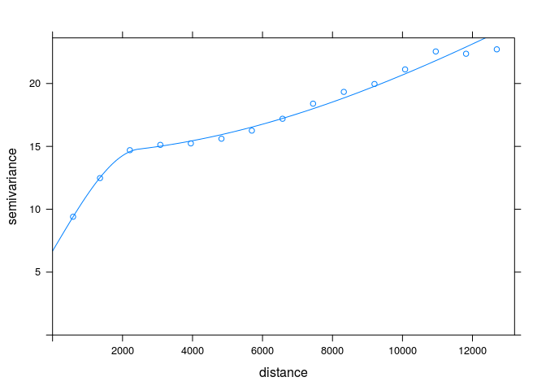
sk <- krige(X2002.08.20_TPZ~1, wolin_lato_los, grid, model=model_zl2, beta=23.6)## [using simple kriging]summary(sk)## Object of class SpatialGridDataFrame
## Coordinates:
## min max
## s1 451080.5 484780.5
## s2 5961519.5 5986319.5
## Is projected: TRUE
## proj4string :
## [+init=epsg:32633 +proj=utm +zone=33 +datum=WGS84 +units=m +no_defs
## +ellps=WGS84 +towgs84=0,0,0]
## Grid attributes:
## cellcentre.offset cellsize cells.dim
## s1 451130.5 100 337
## s2 5961569.5 100 248
## Data attributes:
## var1.pred var1.var
## Min. :18.14 Min. : 6.05
## 1st Qu.:21.01 1st Qu.: 6.91
## Median :22.40 Median : 7.20
## Mean :23.41 Mean : 7.34
## 3rd Qu.:25.41 3rd Qu.: 7.57
## Max. :35.49 Max. :15.74
## NA's :57412 NA's :57412spplot(sk, "var1.pred")
spplot(sk, "var1.var")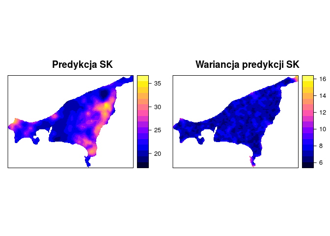
6.4 Kriging zwykły (ang. Ordinary kriging)
6.4.1 Kriging zwykły (ang. Ordinary kriging)
- Średnia traktowana jest jako nieznana
- Uwzględnia lokalne fluktuacje średniej poprzez stosowanie ruchomego okna
6.4.2 Kriging zwykły (ang. Ordinary kriging)
ok <- krige(X2002.08.20_TPZ~1, wolin_lato_los, grid, model=model_zl2, maxdist=1000)## [using ordinary kriging]spplot(ok, "var1.pred")
spplot(ok, "var1.var")spplot(ok, "var1.var", sp.layout=list(wolin_lato_los, pch=21, col="white"))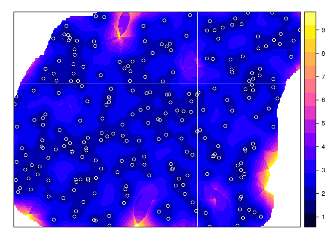
–> ## Kriging z trendem (ang. Kriging with a trend) ### Kriging z trendem (ang. Kriging with a trend)
vario_kzt <- variogram(X2002.08.20_TPZ~X+Y, data=wolin_lato_los)
plot(vario_kzt)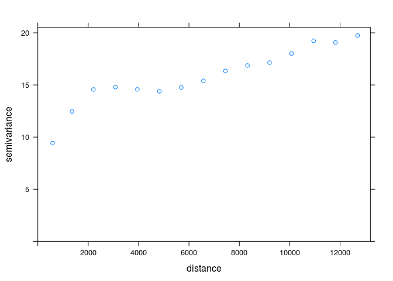
model_kzt <- vgm(psill = 17, model = 'Sph', range = 12000, nugget = 5)
fitted_kzt <- fit.variogram(vario_kzt, model_kzt)
fitted_kzt## model psill range
## 1 Nug 6.931465 0.000
## 2 Sph 8.460149 2930.277plot(vario_kzt, fitted_kzt)
grid_sp <- as(ras, "SpatialPixelsDataFrame")
proj4string(grid_sp) <- proj4string(wolin_lato_los)
grid_sp@data <- as.data.frame(coordinates(grid_sp))
names(grid_sp) <- c("X", "Y")
wolin_lato_los@data <- cbind(wolin_lato_los@data, as.data.frame(coordinates(wolin_lato_los)))
kzt <- krige(X2002.08.20_TPZ~X+Y, wolin_lato_los, grid_sp, model=fitted_kzt)## [using universal kriging]spplot(kzt, "var1.pred")
spplot(kzt, "var1.var")
6.5 Porównanie wyników SK, OK i KZT
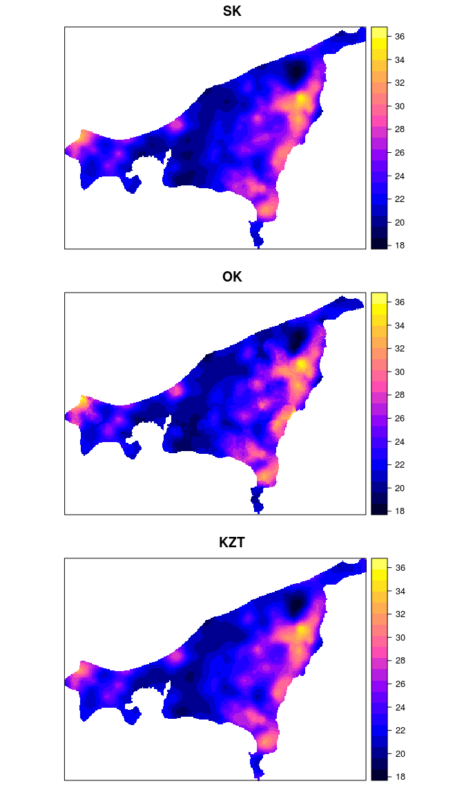
7 Final Words
We have finished a nice book.
8 Ocena jakości estymacji [UWAGA POMIESZANY ME Z RESZTĄ!!]
8.1 Statystyki jakości estymacji
8.1.1 Statystyki jakości estymacji
- Służą do oceny i porównania jakości estymacji
- Do podstawowych statystyk ocen jakości estymacji należą:
- Średni błąd estymacji (ME, ang. mean error)
- Pierwiastek średniego błędu kwadratowego (RMSE, ang. root square prediction error)
- Współczynnik korelacji
- Rozkład błędu (np. 5. percentyl, mediana, 95. percentyl)
8.1.2 Statystyki jakości estymacji
- Idealna estymacja dawałaby brak błędu oraz wspołczynnik korelacji pomiędzy pomiarami (całą populacją) i szacunkiem równy 1
- Wysokie, pojedyncze wartości błędu mogą świadczyć, np. o wystapieniu wartości odstających
8.1.3 Średni błąd estymacji
- Optymalnie wartość średniego błędu estymacji powinna być jak najbliżej 0
\[ ME=\frac{\sum_{i=1}^{n}(\hat{v}_i-v_i)}{n} \]
8.1.4 Pierwiastek średniego błędu kwadratowego
- Optymalnie wartość pierwiastka średniego błędu kwadratowego powinna być jak najmniejsza
\[ RMSE=\sqrt{\frac{\sum_{i=1}^{n}(\hat{v}_i-v_i)^2}{n}} \]
8.1.5 Współczynnik korelacji
- Optymalnie wartość współczynnika korelacji powinna być jak najwyższa
8.1.6 Statystyki jakości estymacji | Mapa
8.1.7 Statystyki jakości estymacji | Histogram

8.1.8 Statystyki jakości estymacji | Wykres rozrzutu

8.2 Walidacja wyników estymacji
8.2.1 Walidacja wyników estymacji
- Dokładne dopasowanie modelu do danych może w efekcie nie dawać najlepszych wyników
- W efekcie ważne jest stosowanie metod pozwalających na wybranie optymalnego modelu
- Do takich metod należy, między innymi, walidacja podzbiorem (ang. jackknifing) oraz kroswalidacja (ang. crossvalidation)
8.2.2 Walidacja podzbiorem
- Polega na podziale zbioru danych na dwa podzbiory - treningowy i testowy
- Zbiór treningowy służy do estymacji wartości
- Wynik estymacji porównywany jest z rzeczywistymi wartościami ze zbioru testowego
- Zaletą tego podejścia jest stosowanie danych niezależnych od estymacji
- Wadą jest konieczność posiadania dużego zbioru danych
8.2.3 Walidacja podzbiorem
library('caret')
set.seed(124)
indeks <- as.vector(createDataPartition(wolin_lato_los$X2002.08.20_TPZ, p=0.75, list=FALSE))
indeks## [1] 1 2 3 4 5 6 7 8 9 10 12 13 14 16 17 18 19
## [18] 21 23 24 25 26 27 28 29 30 32 33 35 39 40 42 43 44
## [35] 45 46 47 48 49 50 51 52 54 55 56 57 58 59 60 61 62
## [52] 63 64 67 68 70 71 72 75 76 77 78 79 81 82 83 85 86
## [69] 87 88 89 90 91 92 93 94 95 96 97 98 102 103 104 105 106
## [86] 107 108 109 111 112 114 115 116 117 118 120 122 123 124 125 127 128
## [103] 129 130 134 136 138 141 142 144 146 147 148 150 151 152 153 155 156
## [120] 157 158 159 160 161 162 163 164 168 169 170 171 173 174 175 177 179
## [137] 180 181 183 184 185 186 187 188 189 190 192 194 195 196 197 198 199
## [154] 200 201 203 204 205 206 207 208 209 210 211 212 213 214 215 217 218
## [171] 219 220 221 223 225 228 230 231 232 233 234 235 236 237 239 240 241
## [188] 242 243 244 246 248 249 250 251 252 253 254 255 257 258 259 262 264
## [205] 265 266 267 268 269 270 271 272 273 274 275 277 279 280 281 286 288
## [222] 289 290 291 292 293 295 297 298 300 301 303 305 307 309 310 311 314
## [239] 315 316 317 318 319 320 321 322 323 324 327 328 329 330 331 334 335
## [256] 336 337 338 339 340 342 343 344 346 347 348 349 350 351 353 354 355
## [273] 357 359 360 361 366 368 369 372 374 376 377 382 383 384 385 386 390
## [290] 391 392 393 395 397 398 399 400 403 404 405 406 407 408 409 411 413
## [307] 415 419 421 422 423 424 425 426 427 428 429 430 433 435 438 439 440
## [324] 441 442 443 444 445 446 448 450 452 453 454 455 458 459 461 466 467
## [341] 468 471 473 474 475 476 477 478 479 481 482 483 484 485 486 488 489
## [358] 490 491 492 493 494 495 496 498 500 501 502 503 504 505 506 507 509
## [375] 512 513 514 515 516 517 518 519 520 521 522 524 525 526 527 528 529
## [392] 530 531 532 533 534 537 538 539 540 541 542 543 544 547 548 549 550
## [409] 551 552 554 555 556 557 558 559 560 561 562 564 565 566 567 568 569
## [426] 570 574 576 577 578 579 580 581 582 583 584 585 586 587 588 589 592
## [443] 593 594 595 596 597 598 601 602 603 604 605 606 607 608 609 610 611
## [460] 614 615 616 617 619 620 621 622 623 624 625 626 627 628 629 630 631
## [477] 632 633 634 635 636 637 638 640 641 643 644 645 646 647 648 649 650
## [494] 651 652 653 656 657 658 659 660 661 664 665 667 668 669 670 671 672
## [511] 673 674 675 676 677 678 679 680 681 682 683 684 685 687 689 693 694
## [528] 695 696 699 700 701 702 703 705 706 713 714 716 718 719 720 722 723
## [545] 724 726 727 729 730 733 734 735 736 737 738 739 740 741 742 743 744
## [562] 745 746 750train <- wolin_lato_los[indeks, ]
test <- wolin_lato_los[-indeks, ]
vario <- variogram(X2002.08.20_TPZ~1, data=train)
model_zl2 <- vgm(10, model = 'Sph', range = 4000, add.to = vgm(5, "Gau", 8000, nugget = 5))
model_zl2## model psill range
## 1 Nug 5 0
## 2 Gau 5 8000
## 3 Sph 10 4000fitted_zl2 <- fit.variogram(vario, model_zl2)
plot(vario, model=fitted_zl2)test_sk <- krige(X2002.08.20_TPZ~1, train, test, model=fitted_zl2, beta=23.6)## [using simple kriging]summary(test_sk)## Object of class SpatialPointsDataFrame
## Coordinates:
## min max
## X 451860 482250
## Y 5962620 5985510
## Is projected: TRUE
## proj4string :
## [+init=epsg:32633 +proj=utm +zone=33 +datum=WGS84 +units=m +no_defs
## +ellps=WGS84 +towgs84=0,0,0]
## Number of points: 186
## Data attributes:
## var1.pred var1.var
## Min. :19.14 Min. : 8.354
## 1st Qu.:21.19 1st Qu.: 9.340
## Median :22.77 Median : 9.858
## Mean :23.57 Mean : 9.959
## 3rd Qu.:25.51 3rd Qu.:10.377
## Max. :33.44 Max. :12.363reszta_sk <- test_sk$var1.pred - test$X2002.08.20_TPZ
summary(reszta_sk)## Min. 1st Qu. Median Mean 3rd Qu. Max.
## -12.99000 -1.28700 0.46090 -0.05885 1.79100 7.78600ME <- sum(reszta_sk)/length(reszta_sk)
ME## [1] -0.05885324RMSE <- sqrt(sum(reszta_sk^2)/length(reszta_sk))
RMSE## [1] 3.173024srednia_reszta <- test$X2002.08.20_TPZ - mean(test$X2002.08.20_TPZ)
R2 <- 1 - sum(reszta_sk^2)/sum(srednia_reszta^2)
R2## [1] 0.5150169test_sk$reszty <- reszta_sk
spplot(test_sk, "reszty")
8.2.4 Kroswalidacja
- W przypadku kroswalidacji te same dane wykorzystywane są do budowy modelu, estymacji, a następnie do oceny prognozy
- Procedura kroswalidacji LOO (ang. leave-one-out cross-validation)
- Zbudowanie matematycznego modelu z dostępnych obserwacji
- Dla każdej znanej obserwacji następuje:
- Usunięcie jej ze zbioru danych
- Użycie modelu do wykonania predykcji w miejscu tej obserwacji
- Wyliczenie reszty (ang. residual), czyli różnicy pomiędzy znaną wartością a obserwacją
- Podsumowanie otrzymanych wyników
- W pakiecie gstat, kroswalidacja LOO jest dostępna w funkcjach krige.cv oraz gstat.cv
8.2.5 Kroswalidacja
vario <- variogram(X2002.08.20_TPZ~1, data=wolin_lato_los)
model_zl2 <- vgm(10, model = 'Sph', range = 4000, add.to = vgm(5, "Gau", 8000, nugget = 5))
fitted_zl2 <- fit.variogram(vario, model_zl2)
cv_sk <- krige.cv(X2002.08.20_TPZ~1, wolin_lato_los, model=fitted_zl2, beta=23.6)
summary(cv_sk)## Object of class SpatialPointsDataFrame
## Coordinates:
## min max
## X 451470 483570
## Y 5962620 5985510
## Is projected: NA
## proj4string : [NA]
## Number of points: 750
## Data attributes:
## var1.pred var1.var observed residual
## Min. :18.10 Min. : 8.320 Min. :17.11 Min. :-11.56584
## 1st Qu.:21.16 1st Qu.: 9.186 1st Qu.:20.48 1st Qu.: -1.57822
## Median :22.61 Median : 9.571 Median :21.89 Median : -0.38231
## Mean :23.57 Mean : 9.673 Mean :23.56 Mean : -0.01102
## 3rd Qu.:25.62 3rd Qu.:10.027 3rd Qu.:25.81 3rd Qu.: 0.96534
## Max. :33.78 Max. :12.626 Max. :41.79 Max. : 13.74115
## zscore fold
## Min. :-3.740951 Min. : 1.0
## 1st Qu.:-0.502235 1st Qu.:188.2
## Median :-0.119653 Median :375.5
## Mean :-0.001631 Mean :375.5
## 3rd Qu.: 0.314956 3rd Qu.:562.8
## Max. : 4.526214 Max. :750.0spplot(cv_sk, "residual")
9 References
10 Wykorzystanie do estymacji danych uzupełniających
10.1 Kriging stratyfikowany (ang. Kriging within strata)
10.1.1 Kriging stratyfikowany (ang. Kriging within strata)
- Zakłada on, że zmienność badanego zjawiska zależy od zmiennej jakościowej (kategoryzowanej)
- Przykładowo, zróżnicowanie badanej zmiennej jest różne w zależności od pokrycia terenu
- Kriging stratyfikowany wymaga posiadania danych zmiennej jakościowej (kategoryzowanej) na całym badanym obszarze
10.1.2 Kriging stratyfikowany (ang. Kriging within strata)
library('gstat')
grid <- read.csv("data/siatka_wolin_lato.csv")
head(grid)## X1999.09.13_NDVI X2002.08.20_NDVI CLC06 CLC06_p_lato odl_od_morza
## 1 0.170732 0.090909 411 5 17190.21
## 2 0.473684 0.428571 411 5 17206.85
## 3 -0.133333 -0.153846 411 5 17148.59
## 4 0.298969 0.230769 411 5 17165.27
## 5 0.500000 0.487603 411 5 17181.86
## 6 0.513889 0.532258 411 5 17198.48
## InsCalk_1999.09 InsCalk_2002.08 X Y
## 1 48.35811 64.16846 472740 5961510
## 2 48.45755 64.25623 472770 5961510
## 3 48.35780 64.16824 472710 5961540
## 4 48.35745 64.16785 472740 5961540
## 5 48.92398 64.66546 472770 5961540
## 6 48.98947 64.72395 472800 5961540coordinates(grid) <- ~X+Y
proj4string(grid) <- proj4string(wolin_lato_los)
gridded(grid) <- TRUE
spplot(grid, "CLC06_p_lato")vario_kws1 <- variogram(X2002.08.20_TPZ~1, wolin_lato_los[wolin_lato_los$CLC06_p_lato==1, ])
plot(vario_kws1)fitted_kws1 <- fit.variogram(vario_kws1, vgm(8, model = 'Sph', range = 1500, nugget = 1))
plot(vario_kws1, fitted_kws1)
vario_kws2 <- variogram(X2002.08.20_TPZ~1, wolin_lato_los[wolin_lato_los$CLC06_p_lato==2, ])
plot(vario_kws2)fitted_kws2 <- fit.variogram(vario_kws2, vgm(8, model = 'Sph', range = 2000, nugget = 4))
plot(vario_kws2, fitted_kws2)vario_kws3 <- variogram(X2002.08.20_TPZ~1, wolin_lato_los[wolin_lato_los$CLC06_p_lato==3, ])
plot(vario_kws3)
fitted_kws3 <- fit.variogram(vario_kws3, vgm(15, model = 'Sph', range = 2000, nugget = 5))
plot(vario_kws3, fitted_kws3)vario_kws4 <- variogram(X2002.08.20_TPZ~1, wolin_lato_los[wolin_lato_los$CLC06_p_lato==4, ])
plot(vario_kws4)fitted_kws4 <- fit.variogram(vario_kws4, vgm(4, model = 'Gau', range = 10000, nugget = 2))
plot(vario_kws4, fitted_kws4)vario_kws5 <- variogram(X2002.08.20_TPZ~1, wolin_lato_los[wolin_lato_los$CLC06_p_lato==5, ])
plot(vario_kws5)fitted_kws5 <- fit.variogram(vario_kws5, vgm(2, model = 'Sph', range = 2000, nugget = 1))
plot(vario_kws5, fitted_kws5)
vario_kws6 <- variogram(X2002.08.20_TPZ~1, wolin_lato_los[wolin_lato_los$CLC06_p_lato==6, ])
plot(vario_kws6)fitted_kws6 <- fit.variogram(vario_kws6, vgm(1, model = 'Gau', range = 2500, nugget = 0.4))
plot(vario_kws6, fitted_kws6)
kws1 <- krige(X2002.08.20_TPZ~1, wolin_lato_los[wolin_lato_los$CLC06_p_lato==1, ], grid[grid$CLC06_p_lato==1, ], model = fitted_kws1, maxdist = 500)## [using ordinary kriging]kws2 <- krige(X2002.08.20_TPZ~1, wolin_lato_los[wolin_lato_los$CLC06_p_lato==2, ], grid[grid$CLC06_p_lato==2, ], model = fitted_kws2, maxdist = 200)## [using ordinary kriging]kws3 <- krige(X2002.08.20_TPZ~1, wolin_lato_los[wolin_lato_los$CLC06_p_lato==3, ], grid[grid$CLC06_p_lato==3, ], model = fitted_kws3, maxdist = 1000)## [using ordinary kriging]kws4 <- krige(X2002.08.20_TPZ~1, wolin_lato_los[wolin_lato_los$CLC06_p_lato==4, ], grid[grid$CLC06_p_lato==4, ], model = fitted_kws4, maxdist = 1000)## [using ordinary kriging]kws5 <- krige(X2002.08.20_TPZ~1, wolin_lato_los[wolin_lato_los$CLC06_p_lato==5, ], grid[grid$CLC06_p_lato==5, ], model = fitted_kws5, maxdist = 500)## [using ordinary kriging]kws6 <- krige(X2002.08.20_TPZ~1, wolin_lato_los[wolin_lato_los$CLC06_p_lato==6, ], grid[grid$CLC06_p_lato==6, ], model = fitted_kws6, maxdist = 500)## [using ordinary kriging]kws <- rbind(as.data.frame(kws1), as.data.frame(kws2), as.data.frame(kws3), as.data.frame(kws4), as.data.frame(kws5), as.data.frame(kws6))
coordinates(kws) <- ~X+Y
kws <- as(kws, "SpatialPixelsDataFrame")
spplot(kws, "var1.pred", sp.layout=(list=SpatialPoints(wolin_lato_los)))
10.2 Prosty kriging ze zmiennymi średnimi lokalnymi (LVM)
10.2.1 Prosty kriging ze zmiennymi średnimi lokalnymi (LVM)
- Prosty kriging ze zmiennymi średnimi lokalnymi zamiast znanej (stałej) stacjonarnej średniej wykorzystuje zmienne średnie lokalne uzyskane na podstawie innej informacji
- Lokalna średnia może być uzyskana za pomocą wyliczenia regresji liniowej pomiędzy zmienną badaną a zmienną dodatkową
10.2.2 Prosty kriging ze zmiennymi średnimi lokalnymi (LVM)
coef <- lm(X2002.08.20_TPZ~sqrt(odl_od_morza), wolin_lato_los)$coef
coef## (Intercept) sqrt(odl_od_morza)
## 20.54376534 0.04678513vario <- variogram(X2002.08.20_TPZ~sqrt(odl_od_morza), wolin_lato_los)
model_sim <- vgm(9, model = 'Sph', range = 4000, nugget = 7)
model_sim## model psill range
## 1 Nug 7 0
## 2 Sph 9 4000fitted_sim <- fit.variogram(vario, model_sim)
fitted_sim## model psill range
## 1 Nug 6.919352 0.000
## 2 Sph 8.695489 2911.116plot(vario, model=fitted_sim)sk_lvm <- krige(X2002.08.20_TPZ~sqrt(odl_od_morza), wolin_lato_los, grid, model=fitted_sim, beta = coef)## [using simple kriging]summary(sk_lvm)## Object of class SpatialPixelsDataFrame
## Coordinates:
## min max
## X 451110 484770
## Y 5961510 5986290
## Is projected: TRUE
## proj4string :
## [+init=epsg:32633 +proj=utm +zone=33 +datum=WGS84 +units=m +no_defs
## +ellps=WGS84 +towgs84=0,0,0]
## Number of points: 288649
## Grid attributes:
## cellcentre.offset cellsize cells.dim
## X 451110 30 1123
## Y 5961510 30 827
## Data attributes:
## var1.pred var1.var
## Min. :17.11 Min. : 0.000
## 1st Qu.:21.05 1st Qu.: 9.330
## Median :22.51 Median : 9.687
## Mean :23.43 Mean : 9.795
## 3rd Qu.:25.37 3rd Qu.:10.147
## Max. :41.79 Max. :15.468spplot(sk_lvm, "var1.pred")
spplot(sk_lvm, "var1.var")10.3 Kriging uniwersalny (ang. Universal kriging)
10.3.1 Kriging uniwersalny (ang. Universal kriging)
- Określany również jako kriging z trendem (ang. Kriging with a trend model)
- Zakłada on, że nieznana średnia lokalna zmiania się stopniowo na badanym obszarze
10.3.2 Kriging uniwersalny (ang. Universal kriging)
wolin_lato_los$CLC06_p_lato <- as.factor(wolin_lato_los$CLC06_p_lato)
vario_uk1 <- variogram(X2002.08.20_TPZ~CLC06_p_lato, wolin_lato_los)
vario_uk1## np dist gamma dir.hor dir.ver id
## 1 2489 586.6262 8.178226 0 0 var1
## 2 6419 1356.0526 9.706976 0 0 var1
## 3 9455 2209.0161 10.309445 0 0 var1
## 4 11765 3079.7299 10.147147 0 0 var1
## 5 13604 3951.9182 10.206803 0 0 var1
## 6 14898 4827.0845 10.013613 0 0 var1
## 7 15759 5695.0007 9.472628 0 0 var1
## 8 16230 6572.6776 9.532064 0 0 var1
## 9 15903 7444.9323 9.849153 0 0 var1
## 10 15958 8323.4239 9.743650 0 0 var1
## 11 15848 9199.8893 10.238576 0 0 var1
## 12 15388 10074.5949 10.608090 0 0 var1
## 13 14428 10950.7884 10.654297 0 0 var1
## 14 13438 11816.4479 10.493071 0 0 var1
## 15 12138 12695.1130 10.654643 0 0 var1plot(vario_uk1)model_uk1 <- vgm(3, model = 'Sph', range = 2300, nugget = 7)
vario_fit_uk1 <- fit.variogram(vario_uk1, model=model_uk1)
vario_fit_uk1## model psill range
## 1 Nug 6.631904 0.000
## 2 Sph 3.479906 1918.538plot(vario_uk1, vario_fit_uk1)grid$CLC06_p_lato <- as.factor(grid$CLC06_p_lato)
spplot(grid, "CLC06_p_lato")uk1 <- krige(X2002.08.20_TPZ~CLC06_p_lato, locations = wolin_lato_los, newdata=grid, model=vario_fit_uk1)## [using universal kriging]spplot(uk1, "var1.pred")
spplot(uk1, "var1.var")
vario_uk2 <- variogram(X2002.08.20_TPZ~X2002.08.20_NDVI+odl_od_morza, wolin_lato_los)
vario_uk2## np dist gamma dir.hor dir.ver id
## 1 2489 586.6262 6.129399 0 0 var1
## 2 6419 1356.0526 9.090591 0 0 var1
## 3 9455 2209.0161 10.841663 0 0 var1
## 4 11765 3079.7299 10.233852 0 0 var1
## 5 13604 3951.9182 9.618208 0 0 var1
## 6 14898 4827.0845 9.492690 0 0 var1
## 7 15759 5695.0007 9.761382 0 0 var1
## 8 16230 6572.6776 9.852395 0 0 var1
## 9 15903 7444.9323 9.943900 0 0 var1
## 10 15958 8323.4239 9.750130 0 0 var1
## 11 15848 9199.8893 9.670453 0 0 var1
## 12 15388 10074.5949 10.228914 0 0 var1
## 13 14428 10950.7884 11.131210 0 0 var1
## 14 13438 11816.4479 11.578387 0 0 var1
## 15 12138 12695.1130 11.753851 0 0 var1plot(vario_uk2)model <- vgm(5, model = 'Sph', range = 2300, nugget = 5)
vario_fit_uk2 <- fit.variogram(vario_uk2, model=model)
vario_fit_uk2## model psill range
## 1 Nug 3.279731 0.000
## 2 Sph 6.931077 2083.678plot(vario_uk2, vario_fit_uk2)uk2 <- krige(X2002.08.20_TPZ~X2002.08.20_NDVI+odl_od_morza, locations = wolin_lato_los, newdata=grid, model=vario_fit_uk2)## [using universal kriging]spplot(uk2, "var1.pred")
spplot(uk2, "var1.var")11 Estymacja lokalnego rozkładu prawdopodobieństwa
11.1 Kriging danych kodowanych (ang. Indicator kriging) | Wprowadzenie
11.1.1 Kriging danych kodowanych (ang. Indicator kriging)
- Jest to metoda krigingu oparta o dane kategoryzowane lub też dane przetworzone z postaci ciągłej do binarnej
- Zazwyczaj używana jest to oszacowania prawdopodobieństwa przekroczenia zdefiniowanej wartości progowej
- Może być też używana do szacowania wartości z całego rozkładu
11.1.2 Kriging danych kodowanych (ang. Indicator kriging)
- Wartości danych wykorzystywane do krigingu danych kodowanych są określone jako 0 lub 1
- Powyzsze kategorie reprezentują czy wartość danej zmiennej jest powyżej czy poniżej określonego progu
11.1.3 Kriging danych kodowanych (ang. Indicator kriging)| Wady i zalety
- Zalety:
- Możliwość zastosowania, gdy nie interesuje nas konkretna wartość, ale znalezienie obszarów o wartości przekraczającej dany poziom
- Nie jest istotny kszałt rozkładu
- Wady:
- Potencjalnie trudne do modelowania semiwariogramy (szczególnie skrajnych przedziałów)
- Czasochłonność/pracochłonność
11.2 Kriging danych kodowanych (ang. Indicator kriging) | Przykłady
11.2.1 Binaryzacja danych
summary(wolin_lato_los$X2002.08.20_TPZ) ## Min. 1st Qu. Median Mean 3rd Qu. Max.
## 17.11 20.48 21.89 23.56 25.81 41.79wolin_lato_los$temp_ind <- wolin_lato_los$X2002.08.20_TPZ < 20
summary(wolin_lato_los$temp_ind) ## Mode FALSE TRUE NA's
## logical 630 120 011.2.2 Eksploracja danych
library('ggplot2')
ggplot(wolin_lato_los@data, aes(X2002.08.20_TPZ)) + stat_ecdf()11.2.3 Kriging danych kodowanych (ang. Indicator kriging) | Semiwariogram
library('gstat')
vario_ind <- variogram(temp_ind~1, wolin_lato_los)
plot(vario_ind)
11.2.4 Kriging danych kodowanych (ang. Indicator kriging) | Modelowanie
model_ind <- vgm(0.05, model = 'Sph', range = 2000, add.to = vgm(0.05, "Exp", 6000, nugget = 0.05))
plot(vario_ind, model=model_ind)
fitted_ind <- fit.variogram(vario_ind, model_ind)
fitted_ind## model psill range
## 1 Nug 0.05007591 0.000
## 2 Exp 0.07173086 12927.822
## 3 Sph 0.05970977 1790.056plot(vario_ind, model=fitted_ind)
11.2.5 Kriging danych kodowanych (ang. Indicator kriging) | Interpolacja
ik <- krige(temp_ind~1, wolin_lato_los, grid, model=fitted_ind)## [using ordinary kriging]spplot(ik, "var1.pred")
spplot(ik, "var1.var")
11.2.6 Kriging danych kodowanych (ang. Indicator kriging)
vario_ind20 <- variogram(I(X2002.08.20_TPZ>20)~1, wolin_lato_los)
fitted_ind20 <- fit.variogram(vario_ind20, vgm(0.1, "Exp", 9000, nugget=0.05))
vario_ind22 <- variogram(I(X2002.08.20_TPZ>22)~1, wolin_lato_los)
fitted_ind22 <- fit.variogram(vario_ind22, vgm(0.15, "Exp", 9000, nugget=0.1))
vario_ind25 <- variogram(I(X2002.08.20_TPZ>25)~1, wolin_lato_los)
fitted_ind25 <- fit.variogram(vario_ind25, vgm(0.1, "Exp", 9000, nugget=0.1))
ik20 <- krige(I(X2002.08.20_TPZ>20)~1, wolin_lato_los, grid, model=fitted_ind20, nmax=10)## [using ordinary kriging]ik22 <- krige(I(X2002.08.20_TPZ>22)~1, wolin_lato_los, grid, model=fitted_ind22, nmax=10)## [using ordinary kriging]ik25 <- krige(I(X2002.08.20_TPZ>25)~1, wolin_lato_los, grid, model=fitted_ind25, nmax=10)## [using ordinary kriging]12 Estymacje wielozmienne
12.1 Kokriging (prosty i zwykły, SCK i OCK)
12.1.1 Kokriging (ang. co-kriging)
- Kokriging pozwala na wykorzystanie dodatkowej zmiennej (ang. auxiliary variable), zwanej inaczej kozmienną (ang. co-variable), która może być użyta do prognozwania wartości badanej zmiennej w nieopróbowanej lokalizacji
- Zmienna dodatkowa może być pomierzona w tych samych miejscach, gdzie badana zmienna, jak też w innych niż badana zmienna
- Możliwa jest też sytuacja, gdy zmienna dodatkowa jest pomierzona w dwóch powyższych przypadkach
- Kokriging wymaga, aby obie zmienne były istotnie ze sobą skorelowane
- Najczęściej kokriging jest stosowany w sytuacji, gdy zmienna dodatkowa jest łatwiejsza (tańsza) do pomierzenia niż zmienna główna
- W efekcie, uzyskany zbiór danych zawiera informacje o badanej zmiennej oraz gęściej opróbowane informacje o zmiennej dodatkowej
- Jeżeli informacje o zmiennej dodatkowej są znane dla całego obszaru wówczas bardziej odpowiednią techniką będzie kriging z zewnątrznym trendem (KED)
12.1.2 Kokriging | Wybór dodatkowej zmiennej
- Wybór zmiennej dodatkowej może opierać się na dwóch kryteriach:
- Teoretycznym
- Empirycznym
12.1.3 Kokriging
library('sp')
wolin_lato_los <- read.csv('data/Wolin_TPZ_p_lato_750losN.csv', na.strings=-999.00)
coordinates(wolin_lato_los) <- ~X+Y
proj4string(wolin_lato_los) <- '+init=epsg:32633'
wolin_lato_los_255 <- wolin_lato_los[!is.na(wolin_lato_los$X1999.09.13_TPZ), ]
wolin_lato_los_750 <- wolin_lato_los
library('gstat')
g <- gstat(NULL, id="TPZ1999", form = X1999.09.13_TPZ~1, data = wolin_lato_los_255)
g <- gstat(g, id="TPZ2002", form = X2002.08.20_TPZ~1, data = wolin_lato_los_750)
g## data:
## TPZ1999 : formula = X1999.09.13_TPZ`~`1 ; data dim = 255 x 9
## TPZ2002 : formula = X2002.08.20_TPZ`~`1 ; data dim = 750 x 9v <- variogram(g)
plot(v)
g <- gstat(g, model=vgm(17, "Sph", 12000, 5), fill.all=TRUE)
g_fit <- fit.lmc(v, g, fit.ranges = FALSE, fit.method=1)
g_fit## data:
## TPZ1999 : formula = X1999.09.13_TPZ`~`1 ; data dim = 255 x 9
## TPZ2002 : formula = X2002.08.20_TPZ`~`1 ; data dim = 750 x 9
## variograms:
## model psill range
## TPZ1999[1] Nug 5.325525 0
## TPZ1999[2] Sph 11.441263 12000
## TPZ2002[1] Nug 10.042044 0
## TPZ2002[2] Sph 11.626818 12000
## TPZ1999.TPZ2002[1] Nug 7.312944 0
## TPZ1999.TPZ2002[2] Sph 10.911990 12000plot(v, g_fit)
ck <- predict(g_fit, grid) ## Linear Model of Coregionalization found. Good.
## [using ordinary cokriging]summary(ck)## Object of class SpatialGridDataFrame
## Coordinates:
## min max
## s1 451080.5 484780.5
## s2 5961519.5 5986319.5
## Is projected: TRUE
## proj4string :
## [+init=epsg:32633 +proj=utm +zone=33 +datum=WGS84 +units=m +no_defs
## +ellps=WGS84 +towgs84=0,0,0]
## Grid attributes:
## cellcentre.offset cellsize cells.dim
## s1 451130.5 100 337
## s2 5961569.5 100 248
## Data attributes:
## TPZ1999.pred TPZ1999.var TPZ2002.pred TPZ2002.var
## Min. :16.71 Min. : 5.77 Min. :19.09 Min. :10.81
## 1st Qu.:20.77 1st Qu.: 6.22 1st Qu.:20.99 1st Qu.:11.23
## Median :22.10 Median : 6.38 Median :22.73 Median :11.35
## Mean :22.93 Mean : 6.43 Mean :23.49 Mean :11.42
## 3rd Qu.:24.52 3rd Qu.: 6.53 3rd Qu.:25.35 3rd Qu.:11.50
## Max. :37.98 Max. :10.42 Max. :34.74 Max. :15.76
## NA's :57412 NA's :57412 NA's :57412 NA's :57412
## cov.TPZ1999.TPZ2002
## Min. : 7.89
## 1st Qu.: 8.30
## Median : 8.42
## Mean : 8.48
## 3rd Qu.: 8.56
## Max. :12.40
## NA's :57412spplot(ck, "TPZ1999.pred")
spplot(ck, "TPZ1999.var")spplot(ck_a, "TPZ1999.pred")
spplot(ck_a, "TPZ1999.var")library('gridExtra')
p1 <- spplot(ck_a, "TPZ1999.pred", main='Predykcja CK - anizotropia')
p2 <- spplot(ck_a, "TPZ1999.var", main='Wariancja CK - anizotropia')
grid.arrange(p1, p2, ncol=2)13 Symulacje
13.1 Symulacje geostatystyczne
13.1.1 Symulacje geostatystyczne
- Kriging daje optymalne predykcje, czyli wyznacza najbardziej potencjalnie możliwą wartość dla wybranej lokalizacji
- Dodatkowo, efektem krigingu jest wygładzony obraz. W konsekwencji wyniki estymacji różnią się od danych pomiarowych
- Jest to tylko (aż?) predykcja. Prawdziwa wartość jest niepewna …
- Korzystając z symulacji geostatystycznych nie tworzymy predykcji, ale generujemy równie prawdopodobne możliwości poprzez symulację z rozkładu prawdopodobieństwa (wykorzystując genereator liczb losowych)
13.1.2 Symulacje geostatystyczne | Cel
- Efekt symulacji ma bardziej realistyczny przestrzenny wzór (ang. pattern) niż kriging, którego efektem jest wygładzona reprezentacja rzeczywistości
- Każda z symulowanych map jest równie prawdopodobna
- Symulacje pozwalają na przedstawianie niepewności interpolacji
- Jednocześnie - kriging jest znacznie lepszy, gdy naszym celem jest jak najdokładniejsza predykcja
13.2 Typy symulacji
13.2.1 Typy symulacji
- Symulacje bezwarunkowe (ang. Unconditional Simulations) - wykorzystuje semiwariogram, żeby włączyć informację przestrzenną, ale wartości ze zmierzonych punktów nie są wykorzystywane.
- Symulacje warunkowe (ang. Conditional Simulations) - opiera się ona o średnią wartość, strukturę kowariancji oraz obserwowane wartości
13.3 Symulacje bezwarunkowe
grid <- read.csv("data/siatka_wolin_lato60.csv")
head(grid)## X Y X1999.09.13_NDVI X2002.08.20_NDVI CLC06 CLC06_p_lato
## 1 484185 5986275 0.3777780 0.3333330 311 4
## 2 484245 5986275 0.3591857 0.3516057 311 4
## 3 484305 5986275 0.4804645 0.4181650 311 4
## 4 484365 5986275 0.4475050 0.4057467 311 4
## 5 484425 5986275 0.4379390 0.4029118 311 4
## 6 484485 5986275 0.4628957 0.4251747 311 4
## odl_od_morza InsCalk_1999.09 InsCalk_2002.08
## 1 2077.811 48.10563 63.98322
## 2 2128.540 48.10553 63.98314
## 3 2183.775 48.10548 63.98310
## 4 2243.541 48.10548 63.98311
## 5 2303.318 48.10548 63.98311
## 6 2363.107 48.10548 63.98310coordinates(grid) <- ~X+Y
proj4string(grid) <- proj4string(wolin_lato_los)
gridded(grid) <- TRUElibrary('gstat')
sym_bezw1 <- krige(formula=z~1, locations=NULL, newdata=grid, dummy=TRUE,
beta=1, model=vgm(psill=0.025,model='Exp',range=100), nsim=4, nmax=30)## [using unconditional Gaussian simulation]spplot(sym_bezw1, main="Przestrzennie skorelowana powierzchnia \nśrednia=1, sill=0.025, zasięg=100, model wykładniczy")
sym_bezw2 <- krige(formula=z~1, locations=NULL, newdata=grid, dummy=TRUE,
beta=1, model=vgm(psill=0.025,model='Exp',range=1500), nsim=4, nmax=30)## [using unconditional Gaussian simulation]spplot(sym_bezw2, main="Przestrzennie skorelowana powierzchnia \nśrednia=1, sill=0.025, zasięg=1500, model wykładniczy")
13.4 Symulacje warunkowe
13.4.1 Sekwencyjna symulacja gaussowska (ang. Sequential Gaussian simulation)
- Wybranie lokalizacji nie posiadającej zmierzonej wartości badanej zmiennej
- Kriging wartości tej lokalizacji korzystając z dostepnych danych, co pozwala na uzyskanie rozkładu prawdopodobieństwa badanej zmiennej
- Wylosowanie wartości z rozkładu prawdopodobieństwa za pomocą generatora liczba losowych i przypisanie tej wartości do lokalizacji
- Dodanie symulowaniej wartości do zbioru danych i przejście do kolejnej lokalizacji
- Powtórzenie poprzednich kroków, aż do momentu gdy nie pozostanie już żadna nieokreślona lokalizacja
13.4.2 Sekwencyjna symulacja gaussowska (ang. Sequential Gaussian simulation)
vario <- variogram(X2002.08.20_TPZ~1, wolin_lato_los, cutoff=8000)
model <- vgm(10, model = 'Sph', range = 4000, nugget=4)
fitted <- fit.variogram(vario, model)
plot(vario, model=fitted)
sym_ok <- krige(X2002.08.20_TPZ~1, wolin_lato_los, grid, model=fitted, nsim=4, nmax=30)## drawing 4 GLS realisations of beta...
## [using conditional Gaussian simulation]spplot(sym_ok)13.4.3 Sekwencyjna symulacja gaussowska (ang. Sequential Gaussian simulation)
sym_sk <- krige(X2002.08.20_TPZ~1, wolin_lato_los, grid, model=fitted, beta=23.6, nsim=100, nmax=30)## [using conditional Gaussian simulation]library('raster')
sym_sk <- stack(sym_sk)
sym_sk_sd <- calc(sym_sk, fun = sd)
spplot(sym_sk_sd)
13.5 Sekwencyjna symulacja danych kodowanych (ang. Sequential indicator simulation)
13.5.1 Sekwencyjna symulacja danych kodowanych (ang. Sequential indicator simulation)
summary(wolin_lato_los$X2002.08.20_TPZ) ## Min. 1st Qu. Median Mean 3rd Qu. Max.
## 17.11 20.48 21.89 23.56 25.81 41.79wolin_lato_los$temp_ind <- wolin_lato_los$X2002.08.20_TPZ < 20
summary(wolin_lato_los$temp_ind) ## Mode FALSE TRUE NA's
## logical 630 120 0vario_ind <- variogram(temp_ind~1, wolin_lato_los)
plot(vario_ind)
model_ind <- vgm(0.05, model = 'Sph', range = 2000, add.to = vgm(0.05, "Exp", 6000, nugget = 0.05))
plot(vario_ind, model=model_ind)
fitted_ind <- fit.variogram(vario_ind, model_ind)
fitted_ind## model psill range
## 1 Nug 0.05007591 0.000
## 2 Exp 0.07173086 12927.822
## 3 Sph 0.05970977 1790.056plot(vario_ind, model=fitted_ind)
sym_ind <- krige(temp_ind~1, wolin_lato_los, grid, model=fitted_ind, indicators=TRUE, nsim=4, nmax=30)## drawing 4 GLS realisations of beta...
## [using conditional indicator simulation]spplot(sym_ind, main='Symulacje warunkowe')